<!doctype html>
<html lang="en">
<head>
  <meta charset="utf-8">
  <meta name="viewport" content="width=device-width, initial-scale=1">
  <title>arxiv digest — 2026-09-03</title>
  <style>
:root {
  --bg: #ffffff;
  --fg: #1f2328;
  --muted: #59636e;
  --border: #d0d7de;
  --card: #f6f8fa;
  --link: #0969da;
}
body {
  max-width: 980px;
  margin: 0 auto;
  padding: 2rem 1rem 5rem;
  font-family: -apple-system, BlinkMacSystemFont, "Segoe UI", Helvetica, Arial, sans-serif;
  line-height: 1.55;
  color: var(--fg);
  background: var(--bg);
}
a { color: var(--link); }
img { max-width: 100%; height: auto; }
pre, code { background: var(--card); border-radius: 6px; }
pre { padding: 1rem; overflow-x: auto; }
blockquote { border-left: 4px solid var(--border); padding-left: 1rem; color: var(--muted); }
details { margin: 0.6rem 0; }
summary { cursor: pointer; font-weight: 600; }
.paper-figures-scroll {
  display: flex;
  gap: 1rem;
  overflow-x: auto;
  overscroll-behavior-x: contain;
  padding: 0.75rem 0.25rem 1rem;
  margin: 1rem 0 1.25rem;
  border-top: 1px solid var(--border);
  border-bottom: 1px solid var(--border);
  scroll-snap-type: x proximity;
}
.paper-figure-card {
  flex: 0 0 min(260px, 72vw);
  scroll-snap-align: start;
  background: var(--card);
  border: 1px solid var(--border);
  border-radius: 12px;
  padding: 0.55rem;
}
.paper-figure-card img {
  display: block;
  width: 100%;
  max-height: 240px;
  object-fit: contain;
  background: white;
  border-radius: 8px;
}
.paper-figure-caption {
  display: block;
  margin-top: 0.5rem;
  color: var(--muted);
  font-size: 0.85rem;
}
.figure-strip-hint {
  color: var(--muted);
  font-size: 0.9rem;
  margin-bottom: -0.3rem;
}
</style>
  <!-- MathJax: renders $...$ inline math and $$...$$ display math, plus
       \(...\) and \[...\]. Loaded from the official CDN; works offline
       once cached. Configured to skip code/pre blocks so arxiv IDs that
       look like dollar amounts don't get mangled. -->
  <script>
    window.MathJax = {
      tex: {
        inlineMath: [['$', '$'], ['\\(', '\\)']],
        displayMath: [['$$', '$$'], ['\\[', '\\]']],
        processEscapes: true,
        processEnvironments: true
      },
      options: {
        skipHtmlTags: ['script', 'noscript', 'style', 'textarea', 'pre', 'code'],
        ignoreHtmlClass: 'tex2jax_ignore',
        processHtmlClass: 'tex2jax_process'
      }
    };
  </script>
  <script id="MathJax-script" async
    src="https://cdn.jsdelivr.net/npm/mathjax@3/es5/tex-chtml.js"></script>
</head>
<body>
<header style="background-color: #333; color: white; padding: 15px; margin-bottom: 20px;">
  <h1 style="margin: 0; font-size: 24px;">
    <a href="https://ochelpan.github.io/arXiv_clean/" style="color: white; text-decoration: none;">Main</a>
  </h1>
</header>

<h1>Daily arXiv Report</h1>

<hr>
<p>
<a href="index.html">← Index</a>
 · <a href="papers_02.html">Next →</a>
</p>
<hr>

<h2>Papers 1–20</h2>
<p><a id="paper-2609.00159"></a></p>
<h3 id="nonlinear-fluctuating-hydrodynamics-from-interacting-noisy-quantum-matter">⭐ <a href="http://arxiv.org/abs/2609.00159v1">Nonlinear Fluctuating Hydrodynamics from Interacting Noisy Quantum Matter</a></h3>
<p><strong>Highlighted author(s):</strong> Zala Lenarčič<br>
<strong>Authors:</strong> Alexios Christopoulos, João Costa, Stefano Scopa, Jacopo De Nardis, Zala Lenarčič, Denis Bernard, Tony Jin<br>
<strong>Type:</strong> theory · <strong>Category:</strong> statistical mechanics · <strong>PDF:</strong> <a href="https://arxiv.org/pdf/2609.00159v1">https://arxiv.org/pdf/2609.00159v1</a><br>
<strong>Analysis basis:</strong> full PDF text, analyzed in chunks
<strong>Topic relevance:</strong> <code>methods for driven-dissipative</code> <strong>3/5</strong> · <code>non-equilibrium universality</code> <strong>3/5</strong> · <code>Keldysh / 2PI / non-Gaussian methods</code> <strong>2/5</strong> · <code>Frenkel-Kontorova</code> <strong>1/5</strong> · <code>Full counting statistics</code> <strong>1/5</strong> · <code>analog quantum simulation</code> <strong>1/5</strong> · <code>correlated / nonlocal dissipation</code> <strong>1/5</strong> · <code>driven-dissipative phase transition</code> <strong>1/5</strong> · <code>quantum measurements</code> <strong>1/5</strong></p>
<div class="figure-strip-hint">↔ Scroll figures horizontally</div>
<div class="paper-figures-scroll">
<figure class="paper-figure-card">
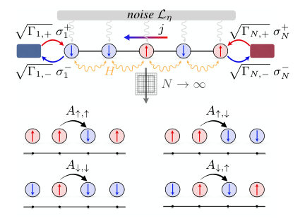
<figcaption class="paper-figure-caption"><b>Fig 1.</b> Figure 1. Microscopic model and emergent stochastic dynamics. Top: XXZ spin chain with bulk dephasing and boundary reservoirs, driving the system to a NESS. Bottom: In the strong-coupling regime, the model reduces to the effective dynamics of the interacting sym- metric exclusion process (ISEP), which describes non-overlapping particles whose jump rates depend on the next-nearest neighbor occu- pation.</figcaption>
</figure>
<figure class="paper-figure-card">
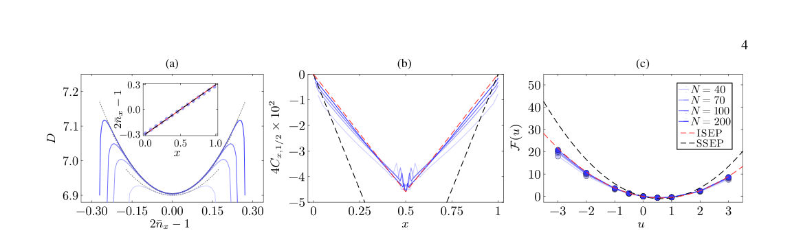
<figcaption class="paper-figure-caption"><b>Fig 2.</b> Figure 2. Comparison of tensor-network results for the microscopic model (2) and the ISEP description. (a) Local diffusivity reconstructed from the NESS magnetization profile and current, D = −¯Jx/∇¯nx, plotted against the local magnetization ⟨ˆσz j=xN⟩= 2¯nx −1. The diffusivity in the bulk is well converged with system size at the maximum length N = 200 considered. Fitting (gray dotted) Eq. (15) to the bulk data fixes the two effective couplings (D0, λ). The inset plot demonstrates the comparison of the magnetization profile with its analytical prediction for ISEP (see SM). (b) Connected spin–spin correlation N⟨ˆσz i=xN ˆσz j=yN⟩c = 4Cx,y at fixed y = 1/2 (regular part Cneq x,y ; the...</figcaption>
</figure>
<figure class="paper-figure-card">
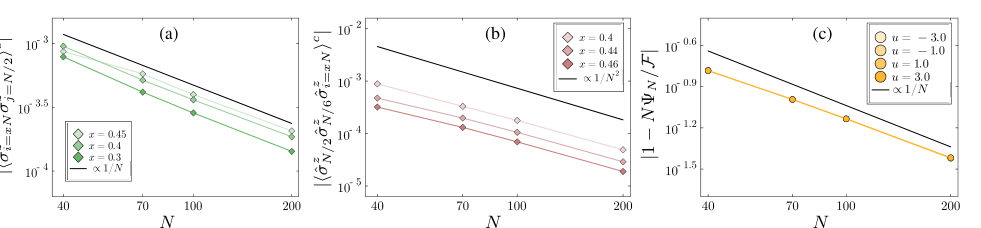
<figcaption class="paper-figure-caption"><b>Fig 3.</b> Figure 3. Finite-size scaling tests of the MFT description. (a) Connected spin correlator of the magnetization, |⟨ˆσz i=xN ˆσz j=N/2⟩c|, for x = 0.3, 0.4, 0.45, which shows good agreement with the 1/N scaling predicted in Eq. (18). (b) Connected spin correlator |⟨ˆσz N/2ˆσz N/6ˆσz i=xN⟩c|, with two sites fixed and the third at x = 0.4, 0.44, 0.46. The correlator shows good agreement with the decay as 1/N 2 predicted i.e., the m = 3 case of Eq. (11). Panels (a) and (b) together validate the scaling used to extract our analytical results of ISEP-MFT. (c) Relative deviation of the finite-size cumulant generating function NΨN(u) from the MFT prediction F(u), for u = ±1, ±3. We see that the...</figcaption>
</figure>
</div>

<p><strong>Summary.</strong> This work tackles the difficult problem of characterizing non-equilibrium steady states in quantum matter by deriving an emergent Macroscopic Fluctuation Theory (MFT). Using a boundary-driven XXZ spin chain model, the authors show that the system's large-scale dynamics are governed by nonlinear diffusion equations featuring density-dependent transport coefficients. This establishes MFT as a powerful, universal framework for interacting quantum diffusive systems.</p>
<p><strong>Why it may be interesting.</strong> It provides a rigorous, microscopic derivation of nonlinear, interacting hydrodynamics, extending the applicability of MFT beyond simple constant-diffusivity models.</p>
<details>
<summary>Detailed structure</summary>
<p><strong>Main problem.</strong> The central challenge is deriving a universal hydrodynamic description for non-equilibrium steady states (NESS) in interacting quantum many-body systems.</p>
<p><strong>Main result.</strong> The authors derive an emergent classical Macroscopic Fluctuation Theory (MFT) for the system, showing that the hydrodynamics features density-dependent diffusivity and mobility.</p>
<p><strong>Method.</strong> The derivation proceeds by taking a continuum limit of the microscopic Lindblad dynamics, leading to nonlinear diffusion equations for the density field.</p>
<p><strong>Model / system.</strong> The system is a boundary-driven XXZ spin chain with bulk dephasing, whose dynamics are governed by a Lindblad master equation. The effective low-energy description resembles an Interacting Symmetric Simple Exclusion Process (ISEP).</p>
<p><strong>Key observables.</strong> Stationary density profile, long-range correlations, and the full counting statistics of the current.</p>
<p><strong>Important parameters / regimes.</strong> Density-dependent diffusivity $D(ar{n})$ and mobility $\sigma(ar{n})$, and the scaling limit $ au = s/N^2$.</p>
<p><strong>Assumptions / limitations.</strong> The theory relies on a Renormalization Group (RG) argument suggesting a diffusive strong-coupling fixed point, and the slow-mode manifold approximation.</p>
<p><strong>Figures summary.</strong> Figures compare tensor-network results for the microscopic model and the ISEP description, showing local diffusivity vs. magnetization and correlation functions.</p>
<p><strong>Paper structure.</strong> The paper first establishes the microscopic dynamics via Lindblad equations, then uses RG arguments to derive the effective MFT equations, and finally applies this framework to compute observables like correlation functions and full counting statistics.</p>
</details>
<details>
<summary>Abstract</summary>
<p>A universal characterization of non-equilibrium steady states in interacting quantum many-body systems remains one of the central challenges of statistical physics. Here, we address this problem for a paradigmatic model of diffusive interacting quantum matter---the boundary-driven XXZ spin chain with bulk dephasing---and derive, directly from its microscopic Lindblad dynamics, an emergent classical Macroscopic Fluctuation Theory (MFT) governing its large-scale fluctuations. Crucially, the resulting hydrodynamics carries a density-dependent diffusivity and mobility as the fingerprint of interactions. This effective description enables the exact computation of the stationary density profile, long-range correlations, and the full counting statistics of the current, in excellent agreement with tensor-network simulations. Our work demonstrates that noisy quantum many-body systems can realize the universality class of genuinely interacting diffusive matter, beyond the constant-diffusivity class of the symmetric simple exclusion process, and establishes MFT as a powerful universal framework for interacting diffusive quantum systems.</p>
</details>
<p><sub><a href="#top">↑ back to top</a></sub></p>

<p><a id="paper-2609.01606"></a></p>
<h3 id="observable-and-state-selective-prethermalization-and-bounds-on-prethermal-lifetimes"><a href="http://arxiv.org/abs/2609.01606v1">Observable- and state-selective prethermalization and bounds on prethermal lifetimes</a></h3>
<p><strong>Authors:</strong> C. L. Sriram, Soumya Kanti Pal, Lea F. Santos<br>
<strong>Type:</strong> theory · <strong>Category:</strong> statistical mechanics · <strong>PDF:</strong> <a href="https://arxiv.org/pdf/2609.01606v1">https://arxiv.org/pdf/2609.01606v1</a><br>
<strong>Analysis basis:</strong> full PDF text, analyzed in chunks
<strong>Topic relevance:</strong> 🔥 <code>scars &amp; prethermalization</code> <strong>5/5</strong> · <code>analog quantum simulation</code> <strong>1/5</strong> · <code>driven-dissipative phase transition</code> <strong>1/5</strong> · <code>non-equilibrium universality</code> <strong>1/5</strong></p>
<div class="figure-strip-hint">↔ Scroll figures horizontally</div>
<div class="paper-figures-scroll">
<figure class="paper-figure-card">
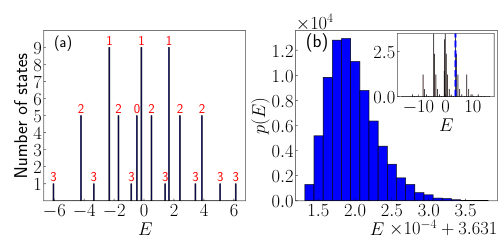
<figcaption class="paper-figure-caption"><b>Fig 1.</b> FIG. 1. Density of states for (a) ˆH(0) with L = 6 and s for each band indicated in red, and (b) a single energy band of ˆH(α̸=0) with L = 16 and α = 10−4. The inset shows that the full spectrum of ˆH(α̸=0) retains the band structure.</figcaption>
</figure>
<figure class="paper-figure-card">

<figcaption class="paper-figure-caption"><b>Fig 2.</b> FIG. 2. Evolution of the (a) entanglement entropy, (b) magnetization along the z-direction Mz and (c) first moment of the excitation density Cz for an initial product state and different interaction-range exponents α, as indicated in panel (b). The magnetization does not exhibit a prethermal plateau.</figcaption>
</figure>
<figure class="paper-figure-card">
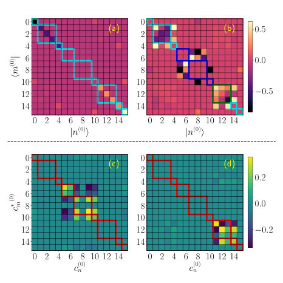
<figcaption class="paper-figure-caption"><b>Fig 3.</b> FIG. 3. Matrix elements of (a) the permutation-invariant magnetization ˆ M z and (b) the first moment of the excitation density ˆCz in the energy eigenbasis of ˆH(0). Overlap matrices c∗ m (0)c(0) n for the initial state (c) | ↑↓↓↑⟩and (d) | ↓↓↑↓⟩. Cyan, blue, green, and red boxes delimit degenerate energy bands. The blue and green boxes in (b) identify the bands relevant to the initial states in (c) and (d), respectively.</figcaption>
</figure>
<figure class="paper-figure-card">
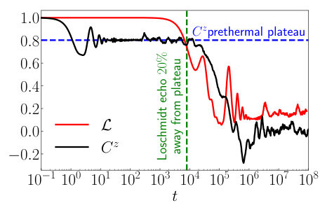
<figcaption class="paper-figure-caption"><b>Fig 4.</b> FIG. 4. Loschmidt echo L and the observable Cz for L = 12 and α = 10−4. Vertical dashed line marks the time at which the Loschmidt echo has departed from its prethermal regime by δL ≈0.2. At this time, Cz(t) remains at its prethermal plateau, illustrating the bound tL ≤tO.</figcaption>
</figure>
<figure class="paper-figure-card">

<figcaption class="paper-figure-caption"><b>Fig 5.</b> Figure 4 illustrates this bound for Cz. At the time when the Loschmidt echo (red curves) reaches a pre- scribed deviation δL, Cz (black curve) remains at its prethermal plateau and is far from reaching the corre- sponding threshold δO in Eq. (13), consistent with the bound in Eq. (15). Conclusions.– We developed a theoretical framework for prethermalization in quantum many-body systems with approximate permutation symmetry. The separa- tion between fast interband and slow intraband dynamics creates a prethermal time window, but does not guaran- tee a prethermal plateau. The emergence of this plateau requires surviving intraband coherences, whose contri- bution is controlled by the...</figcaption>
</figure>
</div>

<p><strong>Summary.</strong> This theoretical paper establishes that prethermalization is an observable- and state-selective phenomenon, meaning not all physical quantities will exhibit a long-lived plateau even if the Hamiltonian suggests it. Crucially, the authors derive a general lower bound on this prethermal lifetime using the Loschmidt echo, providing a powerful diagnostic tool for characterizing non-equilibrium dynamics in quantum many-body systems.</p>
<p><strong>Why it may be interesting.</strong> This work provides rigorous, quantitative tools (like the Loschmidt echo bound) to predict the duration of non-equilibrium dynamics, which is crucial for designing experiments that probe intermediate quantum phases.</p>
<details>
<summary>Detailed structure</summary>
<p><strong>Main problem.</strong> The paper investigates the conditions under which prethermalization occurs in quantum many-body systems, specifically addressing whether separated energy scales guarantee a prethermal plateau for all observables.</p>
<p><strong>Main result.</strong> Prethermalization is highly selective; its existence depends on the specific observable and the initial state, not just the Hamiltonian structure. Furthermore, the Loschmidt echo provides a general lower bound on the prethermal lifetime for any bounded observable.</p>
<p><strong>Method.</strong> The authors use theoretical analysis involving Hamiltonian perturbation theory, analyzing matrix elements in the energy eigenbasis, and deriving bounds using the trace-norm inequality applied to the Loschmidt echo and Uhlmann fidelity.</p>
<p><strong>Model / system.</strong> The analysis is applied to long-range interacting spin models, exemplified by a 1D transverse field Ising model with power-law interactions ($\hat{H}(\alpha)$). The dynamics are studied in the presence of a small perturbation ($\hat{H} = \hat{H}_0 + \epsilon \hat{V}$).</p>
<p><strong>Key observables.</strong> Prethermal plateau visibility, entanglement entropy ($S_{	ext{Ent}}$), total magnetization ($M_z$), first moment of excitation density ($C_z$), Loschmidt echo ($L(t)$), and Uhlmann fidelity ($F(t)$).</p>
<p><strong>Important parameters / regimes.</strong> Interaction-range exponent ($\alpha$), perturbation strength ($\epsilon$), and time scales relative to $\epsilon^{-1}$.</p>
<p><strong>Assumptions / limitations.</strong> The analysis relies on the perturbation strength $\epsilon$ being small and the time $t$ being short relative to the inverse perturbation strength ($t \ll \epsilon^{-1}$).</p>
<p><strong>Figures summary.</strong> Figures illustrate the comparison of time evolution for different observables ($S_{	ext{Ent}}$ vs. $M_z$) showing selectivity, and demonstrate the mathematical bound relating the observable deviation to the Loschmidt echo departure.</p>
<p><strong>Paper structure.</strong> The paper first establishes the general framework of prethermalization in weakly perturbed systems. It then analyzes the role of symmetry (permutation invariance) in suppressing plateaus for certain observables. Finally, it derives and applies the rigorous bound using the Loschmidt echo and fidelity to quantify the minimum prethermal lifetime.</p>
</details>
<details>
<summary>Abstract</summary>
<p>Prethermalization describes long-lived intermediate regimes that precede equilibrium and can dominate experimentally accessible dynamics. Here, we show that a separation of spectral energy scales, despite giving rise to a hierarchy of dynamical timescales, does not by itself guarantee the appearance of a prethermal plateau. Under the same Hamiltonian, some observables may exhibit prethermal behavior, while others relax directly toward equilibrium. We uncover the mechanism governing this selectivity, showing that the emergence of a prethermal plateau depends not only on the Hamiltonian, but also on the observable and the initial state. Our results apply broadly to systems close to a fully permutation-symmetric limit and are illustrated with a long-range interacting spin model. We further prove that the Loschmidt echo provides a lower bound on the prethermal lifetime of any bounded observable whenever the prethermal and exact dynamics are unitary.</p>
</details>
<p><sub><a href="#top">↑ back to top</a></sub></p>

<p><a id="paper-2609.00138"></a></p>
<h3 id="collective-dressed-states-for-inelastic-light-scattering-by-atomic-ensembles"><a href="http://arxiv.org/abs/2609.00138v1">Collective dressed states for inelastic light scattering by atomic ensembles</a></h3>
<p><strong>Authors:</strong> Sébastien Lucas, David Wilkowski, Christian Miniatura, Sergey E. Skipetrov<br>
<strong>Type:</strong> theory · <strong>Category:</strong> other · <strong>PDF:</strong> <a href="https://arxiv.org/pdf/2609.00138v1">https://arxiv.org/pdf/2609.00138v1</a><br>
<strong>Analysis basis:</strong> full PDF text, analyzed in chunks
<strong>Topic relevance:</strong> 🔥 <code>free-space correlated emission</code> <strong>4/5</strong> · <code>Dicke superradiance</code> <strong>3/5</strong> · <code>Tavis-Cummings &amp; cavity-many-emitter</code> <strong>3/5</strong> · <code>correlated / nonlocal dissipation</code> <strong>3/5</strong> · <code>methods for driven-dissipative</code> <strong>3/5</strong> · <code>Keldysh / 2PI / non-Gaussian methods</code> <strong>2/5</strong> · <code>driven-dissipative phase transition</code> <strong>2/5</strong> · <code>interference shaping light</code> <strong>2/5</strong> · <code>analog quantum simulation</code> <strong>1/5</strong> · <code>non-equilibrium universality</code> <strong>1/5</strong> · <code>quantum measurements</code> <strong>1/5</strong> · <code>superradiant laser</code> <strong>1/5</strong></p>
<div class="figure-strip-hint">↔ Scroll figures horizontally</div>
<div class="paper-figures-scroll">
<figure class="paper-figure-card">
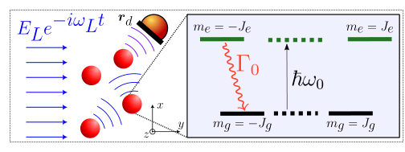
<figcaption class="paper-figure-caption"><b>Fig 1.</b> FIG. 1. Sketch of the considered setup. Nat identical atoms in the free space driven by a coherent laser field EL(r, t). The light scattered by the system is measured by a detector located at rd.</figcaption>
</figure>
<figure class="paper-figure-card">
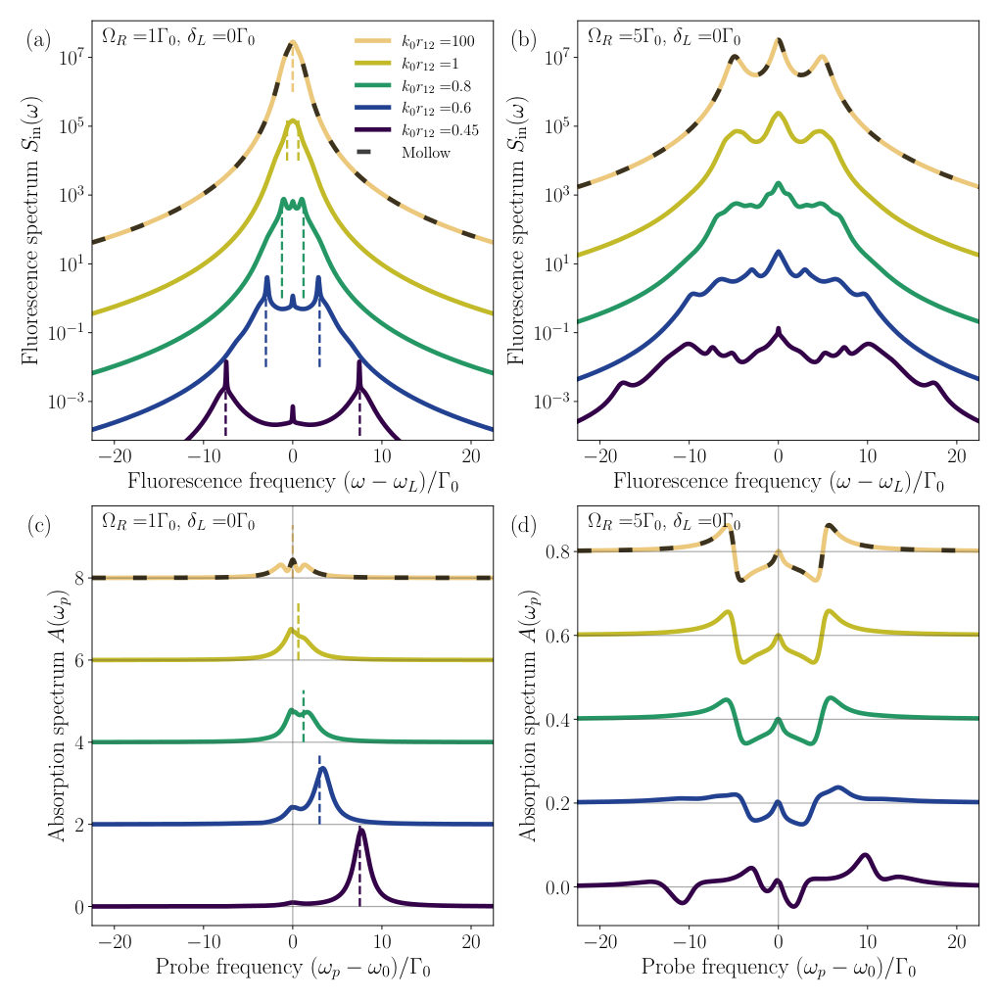
<figcaption class="paper-figure-caption"><b>Fig 2.</b> FIG. 4. (a,b) Fluorescence spectra of a pair of atoms with a transition J = 0 →1 driven in phase by a π-polarized laser (linear polarization perpendicular to the atomic axis, see Fig. 2) at the bare atomic resonance (ωL = ω0) and in the forward direction, for decreasing interatomic distance r12, at moderate ΩR = Γ0 (a) and strong ΩR = 5Γ0 (b) pump. (c,d) Absorption spectra of a weak π-polarized laser beam probing both atoms in phase at frequency ωp at moderate ΩR = Γ0 (c) and strong ΩR = 5Γ0 (d) pump. Colored vertical dashed lines indicate in (c) the superradiant mode frequency ωp −ω0 = −Ω12, and in (a) the sub- and superradiant mode frequencies ω −ω0 = ±Ω12. Black dashed lines show twice...</figcaption>
</figure>
<figure class="paper-figure-card">
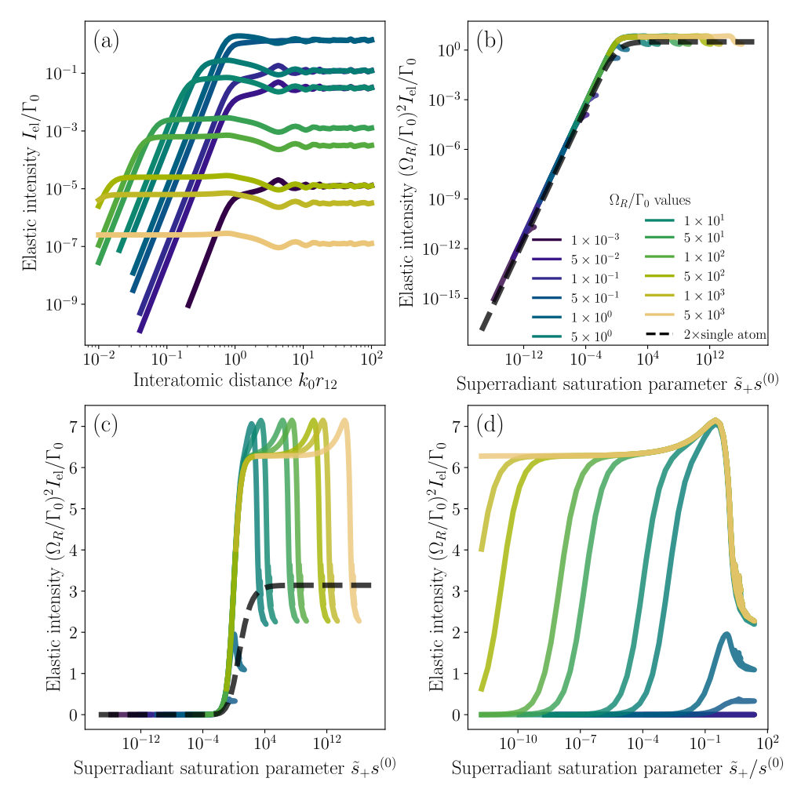
<figcaption class="paper-figure-caption"><b>Fig 3.</b> FIG. 5. (a) Intensity of light elastically scattered by a pair of atoms driven by a linearly polarized laser. Results are averaged over the incident direction, polarization of incident light, and detection angle before being plotted for different Rabi frequencies ΩR as a function of the interatomic distance k0r12. (b,c) Intensity rescaled to make curves obtained for different ΩR coincide at small distances, as a function of the angle-averaged rescaled saturation parameter of the superradiant mode ˜s+s(0), defined in Eq. (51), displayed in log-log (b) and log-linear (c) scales. (d) A different rescaling of the horizontal axis, ˜s+/s(0), makes all curves coincide at large values of ˜s+/s(0).</figcaption>
</figure>
<figure class="paper-figure-card">
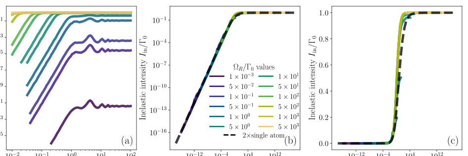
<figcaption class="paper-figure-caption"><b>Fig 4.</b> FIG. 6. (a) Intensity of light scattered inelastically by a pair of atoms driven by a linearly polarized laser. Results are averaged over the incident direction, polarization of incident light, and detection angle before being plotted for different Rabi frequencies ΩR as a function of the interatomic distance k0r12. Same intensities as functions of the angle-averaged rescaled saturation parameter of the superradiant modes ˜s+s(0), defined in Eq. (51), displayed in log-log (b) and log-linear (c) scales.</figcaption>
</figure>
<figure class="paper-figure-card">
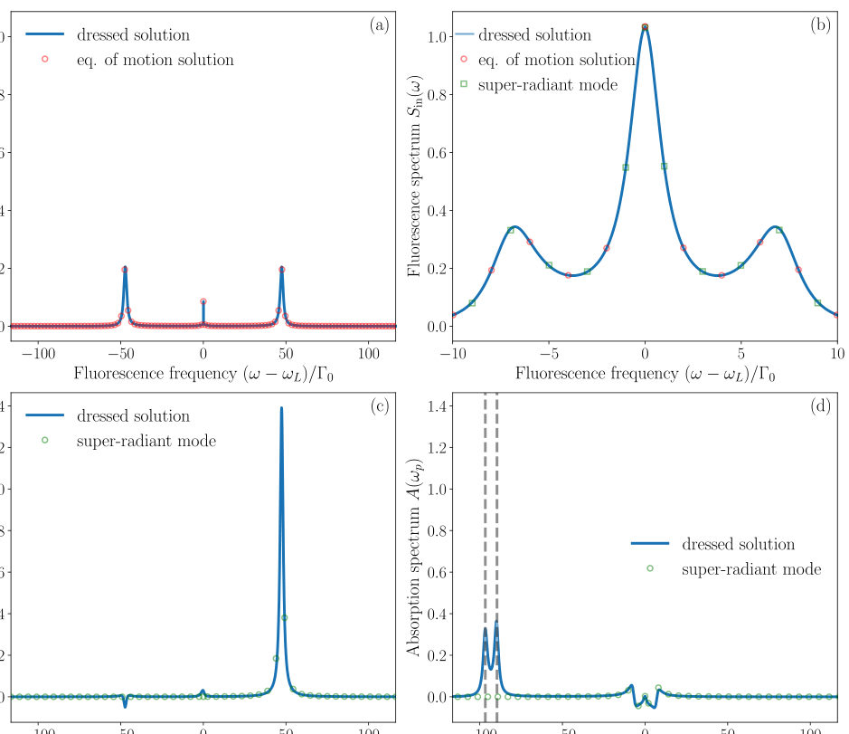
<figcaption class="paper-figure-caption"><b>Fig 5.</b> FIG. 7. (a,b) Fluorescence spectra measured in the forward scattering direction of a pair of atoms separated by k0r12 = 0.35 driven in phase by a π-polarized laser of strength ΩR = 10Γ0, tuned to the atomic resonance frequency (ωL = ω0) (a) or the frequency of the superradiant mode (ωL = ω+) (b). The blue curve shows the computation in the dressed basis, the red curve with circles—the solution of the equations of motions in the natural basis, and the green curve with diamonds—the fluorescence spectra of a single atom with the properties of the superradiant mode (ω0 →ω+, Γ0 →Γ+, and ΩR →Ω+). (c,d) Absorption spectra of a weak π-polarized laser probing in phase (θ(p) in = π/2 in Fig. 2) the...</figcaption>
</figure>
</div>

<p><strong>Summary.</strong> This paper introduces a comprehensive dressed-state framework to model light scattering from ensembles of atoms. It calculates fluorescence, absorption, and correlation functions by treating the full vectorial coupling to the electromagnetic field. The results highlight universal collective behaviors and predict novel quantum optical phenomena arising from atomic interactions.</p>
<p><strong>Why it may be interesting.</strong> This work provides a powerful, general, and computationally implemented tool for analyzing collective quantum optical responses in structured arrays of atoms, bridging quantum electrodynamics with many-body physics.</p>
<details>
<summary>Detailed structure</summary>
<p><strong>Main problem.</strong> To develop a general dressed-state framework for computing light scattering spectra and photon correlations from ensembles of two-level atoms driven by intense coherent fields.</p>
<p><strong>Main result.</strong> The framework reveals universal master curves controlled by collective saturation parameters, and identifies new collective effects like incoherent Raman channels and slow decay timescales when ground-state degeneracy is present.</p>
<p><strong>Method.</strong> The authors use a full vectorial, dressed-state approach solving the Lindbladian to obtain optical observables as explicit sums of Lorentzian lines.</p>
<p><strong>Model / system.</strong> The system consists of an ensemble of N_at two-level atoms with arbitrary J_g -&gt; J_e transitions, interacting with the quantized electromagnetic field in free space under intense coherent driving fields.</p>
<p><strong>Key observables.</strong> Fluorescence spectra, probe absorption spectra, and photon-photon correlations (g^(2)(τ)).</p>
<p><strong>Important parameters / regimes.</strong> Intense coherent drive strength, interatomic distance, and the collective saturation parameter.</p>
<p><strong>Assumptions / limitations.</strong> The analysis relies on the full vectorial treatment, noting that the scalar approximation fails qualitatively in certain geometries.</p>
<p><strong>Figures summary.</strong> Figure 1 sketches the setup showing N_at atoms in free space driven by a coherent laser field, with scattered light measured at a detector.</p>
<p><strong>Paper structure.</strong> The paper develops the general dressed-state framework using a multilevel coupled-dipole master equation, applies it to calculate various spectra using the Quantum Regression Theorem, and extends the analysis to include ground-state degeneracy effects.</p>
</details>
<details>
<summary>Abstract</summary>
<p>We develop a general dressed-state framework for computing fluorescence spectra, probe absorption spectra, and photon-photon correlations of light scattered by ensembles of $N_\mathrm{at}$ two-level atoms with arbitrary $J_g \to J_e$ transitions driven by intense coherent fields. The approach employs a full vectorial treatment of the electromagnetic field, handles any atomic geometries, illumination directions, and polarizations, and yields optical observables as explicit sums of Lorentzian lines whose positions, widths, and weights are directly tied to the eigenvalues and eigenvectors of the Lindbladian. The framework is implemented in an open-source Python package and benchmarked against exact single- and two-atom calculations. We identify geometries in which the full vectorial description is essential, and the scalar approximation fails qualitatively. Applying the method to pairs of atoms with a $J_g=0\to J_e=1$ transition, we show that elastic and inelastic scattered intensities collapse onto universal master curves controlled by a single collective saturation parameter built from the dominant superradiant mode, across several orders of magnitude in drive strength and interatomic distance. We identify collective phenomena that require a description beyond this single-mode picture. Extending the analysis to atoms with ground-state degeneracy, we find that most collective features carry over, while two qualitatively new effects emerge: an incoherent spontaneous Raman channel that modifies the scaling of inelastic emission, and a slow timescale in the time-delayed correlations $g^{(2)}(τ)$ governed by the competition between Raman scattering and subradiant decay, controlled by a single dimensionless parameter. These results provide both physical insight and practical computational tools for engineering collective optical responses in few-atom systems such as optical tweezer arrays.</p>
</details>
<p><sub><a href="#top">↑ back to top</a></sub></p>

<p><a id="paper-2609.00979"></a></p>
<h3 id="topological-charge-switching-in-trapped-polariton-condensates"><a href="http://arxiv.org/abs/2609.00979v1">Topological charge switching in trapped polariton condensates</a></h3>
<p><strong>Authors:</strong> Jaewon Kim, Hyun Gyu Song, Daegwang Choi, Yong-Hoon Cho<br>
<strong>Type:</strong> both · <strong>Category:</strong> quantum gases · <strong>PDF:</strong> <a href="https://arxiv.org/pdf/2609.00979v1">https://arxiv.org/pdf/2609.00979v1</a><br>
<strong>Analysis basis:</strong> full PDF text, analyzed in chunks
<strong>Topic relevance:</strong> 🔥 <code>analog quantum simulation</code> <strong>4/5</strong> · 🔥 <code>driven-dissipative phase transition</code> <strong>4/5</strong> · <code>quantum optics experiment</code> <strong>3/5</strong> · <code>Keldysh / 2PI / non-Gaussian methods</code> <strong>2/5</strong> · <code>methods for driven-dissipative</code> <strong>2/5</strong> · <code>non-equilibrium universality</code> <strong>2/5</strong> · <code>QC/QI experiment</code> <strong>1/5</strong> · <code>correlated / nonlocal dissipation</code> <strong>1/5</strong> · <code>interference shaping light</code> <strong>1/5</strong> · <code>quantum measurements</code> <strong>1/5</strong></p>
<div class="figure-strip-hint">↔ Scroll figures horizontally</div>
<div class="paper-figures-scroll">
<figure class="paper-figure-card">
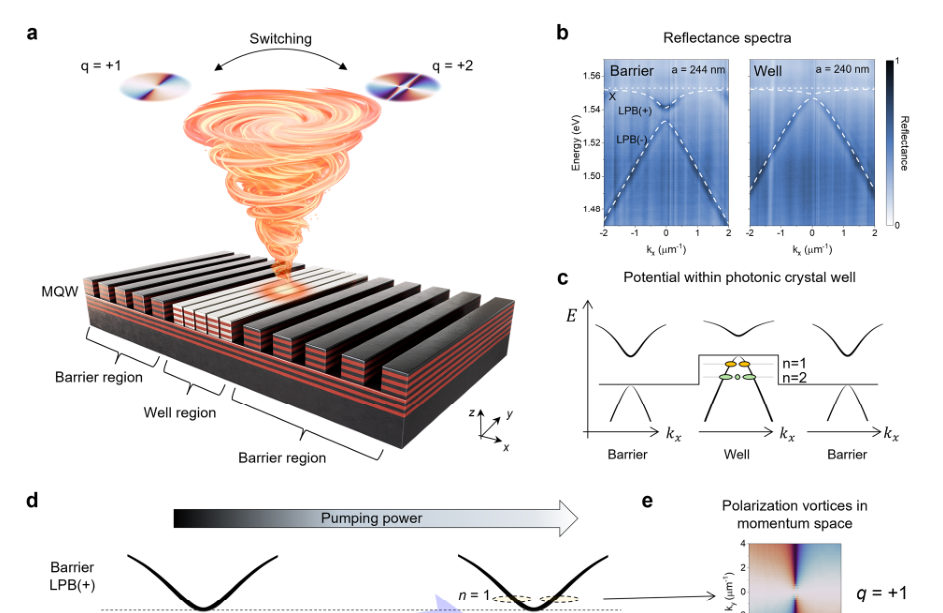
<figcaption class="paper-figure-caption"><b>Fig 1.</b> Fig. 1. Exciton-polariton from photonic crystal well. a, Schematic illustration of an exciton–polariton confined in a photonic crystal well formed by locally modifying the lattice constant of a 1D photonic crystal. b, Polariton dispersion of barrier (a = 244 nm) and well lattice (a = 240 nm) measured by angle-resolved reflectance. LPB (+) and LPB (-) denote the symmetric and antisymmetric lower polariton branches, corresponding to the upper and lower Dirac bands, respectively. c, Confinement mechanism for polaritons with</figcaption>
</figure>
<figure class="paper-figure-card">
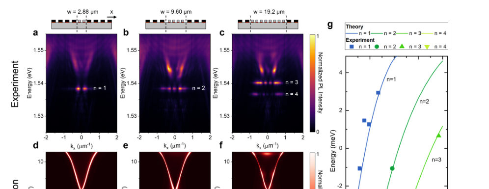
<figcaption class="paper-figure-caption"><b>Fig 2.</b> Fig. 2. Discretized confined states of polaritons. a-c, Experimental dispersion of confined polaritons with a well width of w = 2.88, 9.60, and 19.2 μm under the excitation below the condensation threshold. Discretized confined polariton mode with quantum number of n = 1, n = 2, and n = 3, 4 appear, respectively, on the width. d-f, Simulated dispersion of confined polaritons with the same set of well widths as in a-c. g, Comparison between confined state energy obtained from theoretical calculation (solid line) and those extracted from experimental results (filled symbols).</figcaption>
</figure>
<figure class="paper-figure-card">
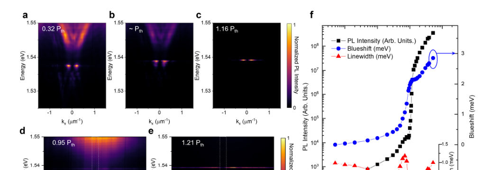
<figcaption class="paper-figure-caption"><b>Fig 3.</b> Fig. 3. Polariton condensation into a confined mode. a-c, Angle-resolved PL spectrum with an excitation power of P = 0.32 Pth, P ~ Pth and P = 1.16 Pth for a well width of w = 1.92 μm. d, e, Spatial-resolved PL spectrum before and after the condensation threshold. Dashed white lines indicate the region of the well. f, Integrated PL intensity (Black), blueshift (Blue), and linewidth (Red) of the confined state by varying excitation power. Superlinear increase of the PL intensity and spectral narrowing indicate the polariton condensation. The blueshift of the polariton mode arises from interaction-induced energy renormalization, with the dominant interaction changing from polariton-exciton...</figcaption>
</figure>
<figure class="paper-figure-card">
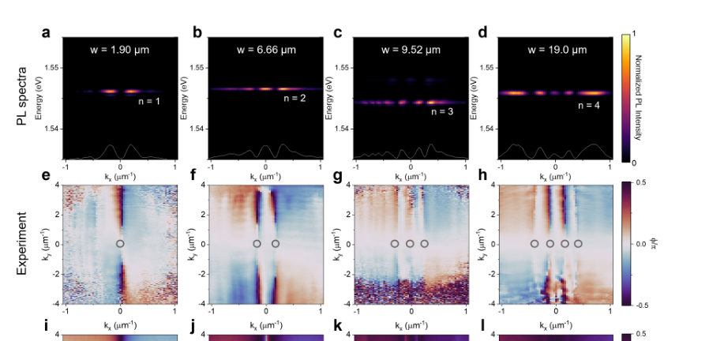
<figcaption class="paper-figure-caption"><b>Fig 4.</b> Fig. 4. Polarization vortex from a single confined mode condensate. a-d, Polariton condensate dispersion for samples with various well widths w = 1.90, 6.66, 9.52, and 19.0 μm under the excitation above the condensation threshold. Each sample exhibits a single- mode condensation in a confined state with quantum numbers of n = 1, 2, 3, and 4, respectively. e-h, Experimental polarization vortices from polarization- and angle-resolved PL images. Open circles indicate the polarization singularities. i-l, Simulated polarization vortices reconstructed from the Dirac spinor components of the corresponding confined modes.</figcaption>
</figure>
<figure class="paper-figure-card">
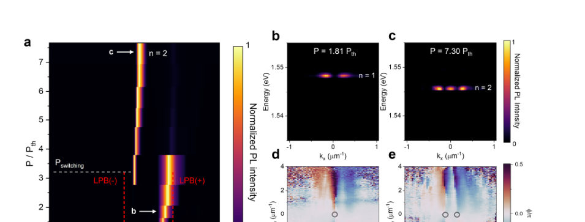
<figcaption class="paper-figure-caption"><b>Fig 5.</b> Fig. 5. Topological switching between confined mode condensates. a, Excitation power-dependent PL spectrum of a confined polariton sample with well width of w = 2.86 μm. Red dashed lines indicate the barrier band edges, Red dashed lines indicate the barrier band edges, measured below the condensation threshold using a sample with only the barrier lattice. The low power region is magnified to highlight condensation to the n = 1 mode. With increasing excitation power, the condensate blueshifts due to the polariton-polariton interaction, and the n = 1 mode merges into the barrier continuum, inducing a transition from n = 1 to n = 2 condensate. b, c, Angle-resolved PL spectrum at P = 1.81 Pth...</figcaption>
</figure>
</div>

<p><strong>Summary.</strong> This paper demonstrates the active, all-optical switching of topological charges in polariton condensates confined within a photonic crystal. By tuning the excitation power, the system forces the condensate to switch between discrete, quantized topological states. This work establishes a novel platform for controlling topological properties using nonlinear optical interactions.</p>
<p><strong>Why it may be interesting.</strong> This work provides a concrete, controllable platform for manipulating topological invariants using nonlinear optical effects (polariton nonlinearity), which is highly relevant for quantum information processing and open quantum systems research.</p>
<details>
<summary>Detailed structure</summary>
<p><strong>Main problem.</strong> The core challenge addressed is achieving active, all-optical reconfiguration (switching) of topological charges in photonic systems that are inherently topologically protected.</p>
<p><strong>Main result.</strong> The authors successfully demonstrated topological charge switching in trapped polariton condensates by tuning the excitation power, causing the condensate to switch between distinct, quantized topological charge states.</p>
<p><strong>Method.</strong> The work combines experimental characterization using angle-resolved PL and reflectance spectroscopy with theoretical modeling using a 1D non-Hermitian Dirac Hamiltonian.</p>
<p><strong>Model / system.</strong> The system utilizes trapped exciton-polariton condensates within a photonic crystal well structure. The physics is modeled by a 1D non-Hermitian Dirac Hamiltonian, which describes the coupled dynamics of the polaritons.</p>
<p><strong>Key observables.</strong> Topological charges ($q = +1$ to $+4$), quantized energy levels ($n=1, 2, 3, 4$), spectral blueshift, and single-mode occupancy.</p>
<p><strong>Important parameters / regimes.</strong> Excitation power ($P$) relative to the condensation threshold ($P_{th}$), well lattice constant, and barrier bandgap energy.</p>
<p><strong>Assumptions / limitations.</strong> The switching mechanism is attributed to the polariton blueshift exceeding the barrier bandgap energy, and the system is modeled by the non-Hermitian Hamiltonian.</p>
<p><strong>Figures summary.</strong> Figures illustrate the schematic of the switching process, experimental confirmation of quantized states via PL spectra vs. well width, and the power-dependent transition showing the shift from one topological state to the next.</p>
<p><strong>Paper structure.</strong> The paper establishes the physical platform (photonic crystal wells), confirms the existence of quantized trapped states, and then demonstrates the switching mechanism by showing how increasing excitation power drives the condensate into a higher-energy, different topological state.</p>
</details>
<details>
<summary>Abstract</summary>
<p>Topological charges in photonic systems provide a robust degree of freedom with direct applications in optical information processing. Bound states in the continuum (BICs) in photonic crystal slabs inherently carry such quantized topological charges, yet they are topologically protected, making active reconfiguration fundamentally challenging. Here, we demonstrate topological charge switching in trapped BIC polariton condensates in a photonic crystal, where spatial modulation of the photonic crystals supports multiple confined states, each carrying a distinct charge. Trapped condensates within the Dirac bandgap are expelled into the leaky band via polariton blueshift, enabling single-mode selection by solely tuning the excitation power. This work offers a platform for optically controlling topological charges by harnessing polariton nonlinearity.</p>
</details>
<p><sub><a href="#top">↑ back to top</a></sub></p>

<p><a id="paper-2609.01197"></a></p>
<h3 id="dynamical-phase-transitions-for-single-particles-in-the-semiclassical-and-weak-noise-limits"><a href="http://arxiv.org/abs/2609.01197v1">Dynamical phase transitions for single particles in the semiclassical and weak noise limits</a></h3>
<p><strong>Authors:</strong> Norayr Asriyan, Jan Meibohm, Vasco Cavina, Massimiliano Esposito<br>
<strong>Type:</strong> theory · <strong>Category:</strong> statistical mechanics · <strong>PDF:</strong> <a href="https://arxiv.org/pdf/2609.01197v1">https://arxiv.org/pdf/2609.01197v1</a><br>
<strong>Analysis basis:</strong> full PDF text, analyzed in chunks
<strong>Topic relevance:</strong> 🔥 <code>driven-dissipative phase transition</code> <strong>4/5</strong> · <code>Keldysh / 2PI / non-Gaussian methods</code> <strong>3/5</strong> · <code>methods for driven-dissipative</code> <strong>3/5</strong> · <code>non-equilibrium universality</code> <strong>3/5</strong> · <code>quantum measurements</code> <strong>2/5</strong> · <code>Frenkel-Kontorova</code> <strong>1/5</strong> · <code>analog quantum simulation</code> <strong>1/5</strong> · <code>correlated / nonlocal dissipation</code> <strong>1/5</strong> · <code>scars &amp; prethermalization</code> <strong>1/5</strong></p>
<div class="figure-strip-hint">↔ Scroll figures horizontally</div>
<div class="paper-figures-scroll">
<figure class="paper-figure-card">
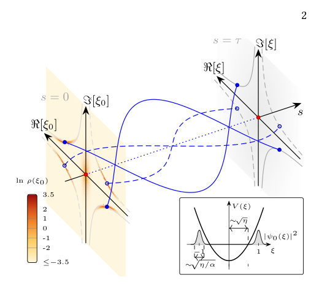
<figcaption class="paper-figure-caption"><b>Fig 1.</b> FIG. 1. Trajectories corresponding to the saddles of 𝑆. Solid blue lines show a pair of ”direct” trajectories (𝜉= 𝜉0), dashed blue lines show the ”exchange” trajectories (𝜉= −𝜉0). The ”origin-returning” trajectory 0 →0 is the dotted blue line. The solid and dashed gray curves on the 𝑠= 0 and 𝑠= 𝜏planes are the projections of the steepest-descent surface onto the 𝜉= 𝜉0 and 𝜉= −𝜉0 subspaces respectively. The density plot on the 𝑠= 0 plane shows the numeri- cally sampled initial-endpoint density 𝜌(𝜉0). Here 𝜂= 0.3, 𝛼= 0.65 and 𝜏𝑥= 4.75 (for this particular time the direct saddle is dominant). The density plot is a result of numerical sampling of 𝑁= 106 trajec- tories (see details in Appendix...</figcaption>
</figure>
<figure class="paper-figure-card">
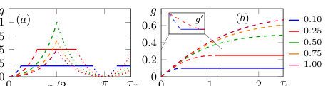
<figcaption class="paper-figure-caption"><b>Fig 2.</b> FIG. 2. The SRF for the quantum (𝑎) and classical (𝑏) problems. Dashed, solid, and dotted lines indicate dominance of the direct, origin, and exchange saddles, respectively. Kinks occur in 𝑔for the quantum evolution and in 𝑔′ (inset) for the classical relaxation.</figcaption>
</figure>
<figure class="paper-figure-card">
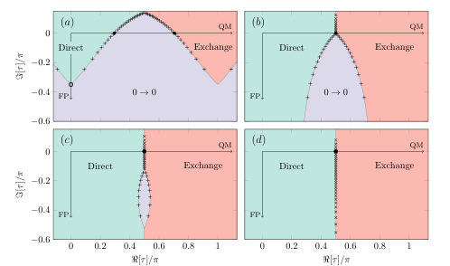
<figcaption class="paper-figure-caption"><b>Fig 3.</b> FIG. 4. Dynamical phase diagram and zeros of 𝐺(𝜏) for 𝜂= 0.01: (a) 𝛼= 0.25; (b) 𝛼= 0.5; (c) 𝛼= 0.65; (d) 𝛼= 0.8. Zeros of 𝐺(𝜏) are shown as scatter points. Filled and hollow circles mark first- and second-order phase transition points, respectively.</figcaption>
</figure>
<figure class="paper-figure-card">
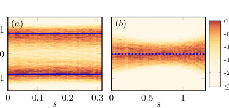
<figcaption class="paper-figure-caption"><b>Fig 4.</b> FIG. 3. Trajectory density from 𝑁= 108 Brownian trajectories for 𝜂= 0.1, 𝛼= 0.25, and (a) 𝜏𝑦= 0.3; (b) 𝜏𝑦= 1.3, before and after the phase transition, respectively. As in Fig. 1, lines show the direct (solid blue) and origin (dotted black) saddles. The exchange saddle does not contribute at these times (see Fig. 7 (a) in Appendix C).</figcaption>
</figure>
<figure class="paper-figure-card">
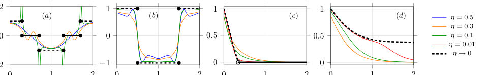
<figcaption class="paper-figure-caption"><b>Fig 5.</b> FIG. 5. Order parameter time dependence for different values of 𝜂, in the quantum case for (a) 𝛼= 0.25 and (b) 𝛼= 0.8; and in the classical case for (c) 𝛼= 0.25 and (d) 𝛼= 0.8. Filled and hollow points mark phase transitions in accordance with panels (a) and (d) in Fig. 4. Thick black lines show the asymptotic behavior for 𝜂→0.</figcaption>
</figure>
</div>

<p><strong>Summary.</strong> This paper presents a unified theory connecting dynamical phase transitions in quantum systems (unitary evolution) and classical systems (dissipative relaxation). By analyzing the complex-time behavior of a dynamical generating function, the authors show that the semiclassical limit bridges the gap, allowing single-particle quantum systems to exhibit transitions analogous to those found in classical statistical mechanics.</p>
<p><strong>Why it may be interesting.</strong> This work is highly relevant as it provides a powerful, unified mathematical framework to study non-equilibrium dynamics and phase transitions in both quantum and classical regimes, extending concepts from many-body physics to single-particle systems.</p>
<details>
<summary>Detailed structure</summary>
<p><strong>Main problem.</strong> The paper unifies the description of dynamical phase transitions (DPTs) occurring in both the unitary evolution of an isolated quantum particle and the dissipative relaxation of a classical Brownian particle.</p>
<p><strong>Main result.</strong> It establishes a direct, unified connection between quantum and classical finite-time DPTs, showing that the semiclassical limit acts analogously to the thermodynamic limit.</p>
<p><strong>Method.</strong> The analysis employs a dynamical generating function, utilizing saddle-point approximations of path integrals and analyzing the condensation of Fisher zeros in the complex-time plane.</p>
<p><strong>Model / system.</strong> The models include a quantum particle undergoing quench dynamics and a classical Brownian particle relaxing in a potential, both analyzed via their respective propagators or Fokker-Planck equations.</p>
<p><strong>Key observables.</strong> Survival Amplitude (SA)/Survival Rate Function (SRF), and a unifying, trajectory-based order parameter realized as a classical correlation function and a sequential quantum weak value.</p>
<p><strong>Important parameters / regimes.</strong> Semiclassical limit ($\hbar 	o 0$) and weak-noise limit ($\eta 	o 0$); the competition between different saddle trajectories.</p>
<p><strong>Assumptions / limitations.</strong> The analysis relies heavily on the saddle-point approximation for the path integral and the identification of Fisher zeros in the complex time plane.</p>
<p><strong>Figures summary.</strong> Figures illustrate saddle trajectories determining the propagator, and show the SRF for both quantum and classical problems, revealing kinks at critical times.</p>
<p><strong>Paper structure.</strong> The paper develops the unifying framework by first analyzing the quantum and classical dynamics separately using the generating function, then demonstrating the correspondence through the complex-time structure of the Fisher zeros, and finally defining the shared order parameter.</p>
</details>
<details>
<summary>Abstract</summary>
<p>We present a unifying description of dynamical phase transitions in the unitary evolution of an isolated quantum particle and the dissipative relaxation of a classical Brownian particle, based on a dynamical generat- ing function. In the semiclassical and weak-noise limits, Fisher zeros of this function condense in the complex- time plane and reach the corresponding physical axes, producing dynamical phase transitions through a competition between return trajectories. This establishes a direct connection between quantum and classical (finite-time) dynamical phase transitions, where the semiclassical limit plays the role of the thermodynamic limit. In particular, the established link naturally provides a classical version of the Loschmidt amplitude and shows how dynamical quantum phase transitions, typically associated with isolated many-body systems, can arise in a single-particle quantum system. The dynamical phases are distinguished by a unifying, trajectory- based order parameter, realized as a classical correlation function and a sequential quantum weak value.</p>
</details>
<p><sub><a href="#top">↑ back to top</a></sub></p>

<p><a id="paper-2609.00971"></a></p>
<h3 id="kibble-zurek-mechanism-and-defect-freezing-in-imbalanced-pairing-kitaev-models"><a href="http://arxiv.org/abs/2609.00971v1">Kibble--Zurek Mechanism and Defect Freezing in Imbalanced-Pairing Kitaev Models</a></h3>
<p><strong>Authors:</strong> R. Jafari, Alireza Akbari, Shukhrat Mardonov, A. Langari<br>
<strong>Type:</strong> theory · <strong>Category:</strong> statistical mechanics · <strong>PDF:</strong> <a href="https://arxiv.org/pdf/2609.00971v1">https://arxiv.org/pdf/2609.00971v1</a><br>
<strong>Analysis basis:</strong> full PDF text, analyzed in chunks
<strong>Topic relevance:</strong> 🔥 <code>non-equilibrium universality</code> <strong>4/5</strong> · <code>analog quantum simulation</code> <strong>3/5</strong> · <code>driven-dissipative phase transition</code> <strong>3/5</strong> · <code>Keldysh / 2PI / non-Gaussian methods</code> <strong>2/5</strong> · <code>correlated / nonlocal dissipation</code> <strong>2/5</strong> · <code>methods for driven-dissipative</code> <strong>2/5</strong></p>
<div class="figure-strip-hint">↔ Scroll figures horizontally</div>
<div class="paper-figures-scroll">
<figure class="paper-figure-card">
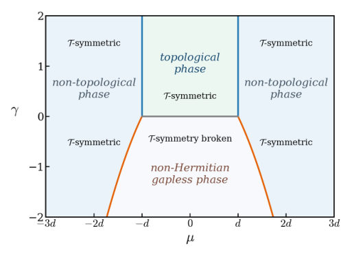
<figcaption class="paper-figure-caption"><b>Fig 1.</b> FIG. 1. Phase diagram of d-dimensional imbalanced-pairing Kitaev models for w = ∆= 1. For γ &gt; 0, the ordinary critical points are located at µc = ±d, where d = 1, 2 denotes the spatial dimension. For γ &lt; 0, the EPs occur at µex = ±d√1 −γ.</figcaption>
</figure>
<figure class="paper-figure-card">
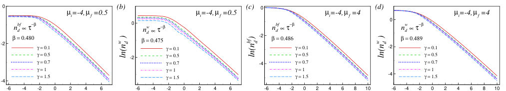
<figcaption class="paper-figure-caption"><b>Fig 2.</b> FIG. 2. Scaling behavior of the excitation density as a function of the ramp time scale τ in the two-dimensional imbalanced-pairing Kitaev model for T -symmetric quenches with γ &gt; 0. Panels (a) and (b) correspond to a ramp across a single critical point from µi = −4 to µf = 0.5, evaluated within the biorthogonal framework and the wave-function normalization approach, respectively. Panels (c) and (d) show the corresponding results for a ramp crossing two critical points from µi = −4 to µf = 4, within the biorthogonal framework and the wave- function normalization approach, respectively. The system size is Nx = 400 and Ny = 440.</figcaption>
</figure>
<figure class="paper-figure-card">
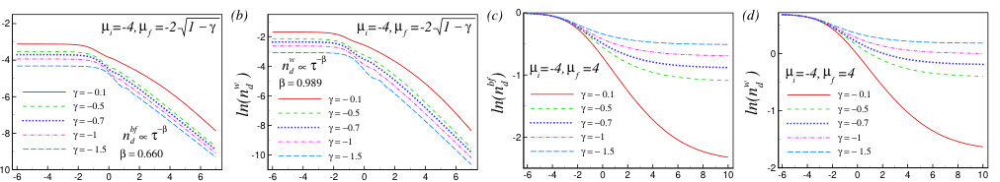
<figcaption class="paper-figure-caption"><b>Fig 3.</b> FIG. 3. Scaling behavior of the excitation density as a function of the ramp time scale τ in the two-dimensional imbalanced-pairing Kitaev model for γ &lt; 0. Panels (a) and (b) correspond to a T -symmetric quench from µi = −4 to the exceptional point µex = −2√1 −γ, evaluated within the biorthogonal framework and the wave-function normalization approach, respectively. Panels (c) and (d) show the corresponding results for a quench through the PT -symmetry-broken region from µi = −4 to µf = 4, within the biorthogonal framework and the wave- function normalization approach, respectively. The system size is Nx = 400 and Ny = 440.</figcaption>
</figure>
<figure class="paper-figure-card">
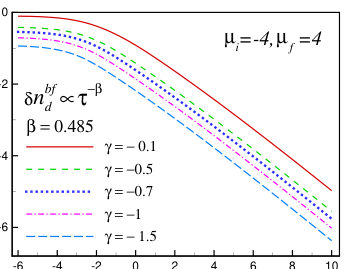
<figcaption class="paper-figure-caption"><b>Fig 4.</b> FIG. 4. Scaling behavior of the excess excitation density nbf d (τ) − nbf d (∞) as a function of the ramp time scale τ for a quench through the T -symmetry-broken region from µi = −4 to µf = 4, with γ &lt; 0, in the biorthogonal framework for the two-dimensional imbalanced-pairing Kitaev model. The system size is Nx = 400 and Ny = 440.</figcaption>
</figure>
<figure class="paper-figure-card">
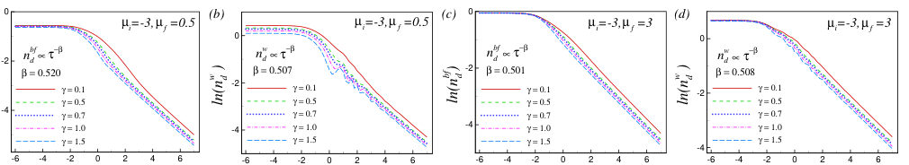
<figcaption class="paper-figure-caption"><b>Fig 5.</b> FIG. 5. Scaling behavior of the excitation density as a function of the ramp time scale τ in the one-dimensional imbalanced-pairing Kitaev model for T -symmetric quenches with γ &gt; 0. Panels (a) and (b) correspond to a ramp across a single critical point from µi = −3 to µf = 0.5, evaluated within the biorthogonal framework and the wave-function normalization approach, respectively. Panels (c) and (d) show the corresponding results for a ramp crossing two critical points from µi = −3 to µf = 3, within the biorthogonal framework and the wave- function normalization approach, respectively. The system size is N = 1000.</figcaption>
</figure>
</div>

<p><strong>Summary.</strong> This theoretical study analyzes defect production in imbalanced-pairing Kitaev models driven across quantum critical and exceptional points. By comparing two mathematical frameworks, the authors show how defect scaling laws are modified when time-reversal symmetry is broken, leading to phenomena like defect freezing. This provides critical insights into non-equilibrium physics in non-Hermitian quantum systems.</p>
<p><strong>Why it may be interesting.</strong> This work extends critical dynamics concepts (KZM) into the non-Hermitian domain, which is crucial for understanding open quantum systems, driven dynamics, and topological phases relevant to AMO physics.</p>
<details>
<summary>Detailed structure</summary>
<p><strong>Main problem.</strong> The paper investigates the non-equilibrium dynamics and defect production in imbalanced-pairing Kitaev models as the system is driven across critical and exceptional points.</p>
<p><strong>Main result.</strong> The defect density exhibits conventional or extended Kibble-Zurek scaling in certain regimes, but traversing the time-reversal-symmetry-broken region leads to defect freezing, while excess defects still follow KZM scaling.</p>
<p><strong>Method.</strong> The analysis employs two distinct theoretical frameworks—the wave-function normalization approach and the biorthogonal framework—to study the time evolution governed by a non-Hermitian Hamiltonian.</p>
<p><strong>Model / system.</strong> The system is the one- and two-dimensional imbalanced-pairing Kitaev model, described by a time-dependent, non-Hermitian Hamiltonian $H(t)$ controlled by a parameter $h(t)$.</p>
<p><strong>Key observables.</strong> Defect density ($n^d$), quasiparticle spectrum (real vs. complex eigenvalues), and the scaling exponents ($eta$) of the defect production.</p>
<p><strong>Important parameters / regimes.</strong> The pairing imbalance parameter (positive vs. negative), the nature of the quench (ending at a critical point vs. an exceptional point), and dimensionality (1D vs. 2D).</p>
<p><strong>Assumptions / limitations.</strong> The analysis assumes initial preparation in the instantaneous right ground state, and defect freezing itself indicates a breakdown of adiabaticity.</p>
<p><strong>Paper structure.</strong> The paper is structured by analyzing the dynamics using two frameworks (wave-function normalization and biorthogonal), detailing the model and phase diagram, deriving the quench dynamics, and finally investigating the specific defect production mechanisms.</p>
</details>
<details>
<summary>Abstract</summary>
<p>We investigate driven dynamics across critical and exceptional points in the one- and two-dimensional imbalanced-pairing Kitaev models using both the wave-function normalization approach and the biorthogonal framework. For a positive pairing imbalance parameter, the quasiparticle spectrum remains real, and a pairing imbalance neither shifts the equilibrium phase boundaries nor generates imaginary eigenenergies. In this regime, the defect density follows the conventional Kibble--Zurek scaling in one dimension and the extended Kibble--Zurek scaling, arising from a gapless manifold, in two dimensions within both frameworks. The corresponding scaling exponents are therefore governed by those of the Hermitian transition. For a negative pairing imbalance parameter, time-reversal symmetry is broken, the quasiparticle spectrum develops complex eigenvalues, and the gap closes at exceptional points. For ramps ending at an exceptional point, the defect density follows the modified Kibble--Zurek scaling in the wave-function normalization approach, whereas it obeys the conventional Kibble--Zurek scaling in the biorthogonal framework. When the ramp traverses the time-reversal-symmetry-broken region, a finite density of defects remains even in the adiabatic limit, leading to defect freezing in both frameworks. Although this frozen background indicates a breakdown of adiabaticity, the excess defects generated on top of this background continue to obey the conventional Kibble--Zurek scaling in one dimension and the extended Kibble--Zurek scaling in two dimensions.</p>
</details>
<p><sub><a href="#top">↑ back to top</a></sub></p>

<p><a id="paper-2609.00622"></a></p>
<h3 id="feedback-enhanced-quantum-metrology-and-clock-precision-under-thermodynamic-uncertainty"><a href="http://arxiv.org/abs/2609.00622v1">Feedback-Enhanced Quantum Metrology and Clock Precision under Thermodynamic Uncertainty</a></h3>
<p><strong>Authors:</strong> Jincheng Lu, Chen Wang<br>
<strong>Type:</strong> theory · <strong>Category:</strong> statistical mechanics · <strong>PDF:</strong> <a href="https://arxiv.org/pdf/2609.00622v1">https://arxiv.org/pdf/2609.00622v1</a><br>
<strong>Analysis basis:</strong> full PDF text, analyzed in chunks
<strong>Topic relevance:</strong> 🔥 <code>quantum measurements</code> <strong>4/5</strong> · <code>Full counting statistics</code> <strong>3/5</strong> · <code>correlated / nonlocal dissipation</code> <strong>2/5</strong> · <code>driven-dissipative phase transition</code> <strong>2/5</strong> · <code>methods for driven-dissipative</code> <strong>2/5</strong> · <code>Keldysh / 2PI / non-Gaussian methods</code> <strong>1/5</strong> · <code>non-equilibrium universality</code> <strong>1/5</strong></p>
<div class="figure-strip-hint">↔ Scroll figures horizontally</div>
<div class="paper-figures-scroll">
<figure class="paper-figure-card">
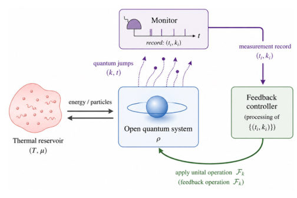
<figcaption class="paper-figure-caption"><b>Fig 1.</b> FIG. 1. Schematic of the quantum-jump feedback control setup. An open quantum system (center) exchanges energy and/or particles with a thermal reservoir, generating stochas- tic quantum jumps. A monitor continuously detects each jump and records its type and occurrence time. Conditioned on the detected jump type, a feedback controller immediately applies a unital operation Fk to the system. The monitor and controller together form the feedback loop.</figcaption>
</figure>
<figure class="paper-figure-card">
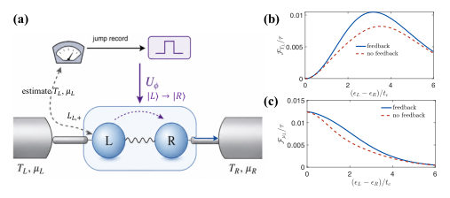
<figcaption class="paper-figure-caption"><b>Fig 2.</b> FIG. 2. Feedback-enhanced thermometry with a charge- monitored DQD. (a) Schematic of the setup. The DQD is coupled to two electronic reservoirs at temperatures TL, TR and chemical potentials µL, µR. A left-injection jump LL,+ is continuously monitored. Conditioned on its detection, a fast unitary feedback pulse Uϕ rotates the post-jump state from the left dot toward the right dot, reshaping the subsequent waiting-time and jump statistics. The resulting feedback- controlled jump record is used to estimate TL. (b) Fisher in- formation rate FTL/τ for estimating the left-reservoir temper- ature TL versus the DQD detuning ϵL−ϵR, with µL = µR = 0 and the average dot energy fixed at (ϵL+ϵR)/2 = 0....</figcaption>
</figure>
<figure class="paper-figure-card">
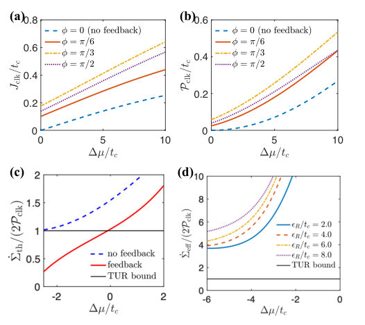
<figcaption class="paper-figure-caption"><b>Fig 3.</b> FIG. 3. Feedback-stabilized DQD quantum clock and its thermodynamic cost. Right-reservoir output events are in- terpreted as clock ticks, with Jclk the net tick rate and Sclk the corresponding zero-frequency noise. (a) Tick rate Jclk/tc versus the chemical-potential bias ∆µ = µL −µR for sev- eral feedback angles ϕ. (b) Clock precision Pclk/tc for the same set of ϕ. (c) Reservoir-only TUR ratio ˙Σth/(2Pclk) versus ∆µ/tc. Values below the horizontal line indicate that the thermal entropy production alone is insufficient to bound the feedback-stabilized clock precision. (d) Effective TUR ratio ˙Σeff/(2Pclk). The feedback entropy production is ˙Σinfo fb = R(fb) L,+σfb, where R(fb) L,+ is the...</figcaption>
</figure>
<figure class="paper-figure-card">
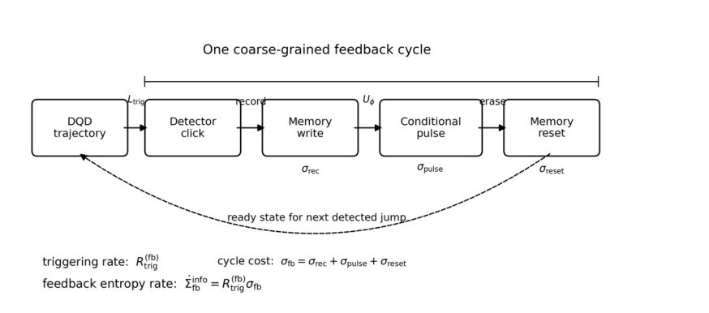
<figcaption class="paper-figure-caption"><b>Fig 4.</b> FIG. 4. Coarse-grained feedback cycle used to assign the information entropy production of the feedback apparatus. A detected triggering jump Ltrig initiates a feedback cycle consisting of detection, record writing, conditional control, and memory reset. The entropy cost of one cycle is denoted by σfb = σrec + σpulse + σreset. Since triggering events occur with stationary rate R(fb) trig,</figcaption>
</figure>
<figure class="paper-figure-card">
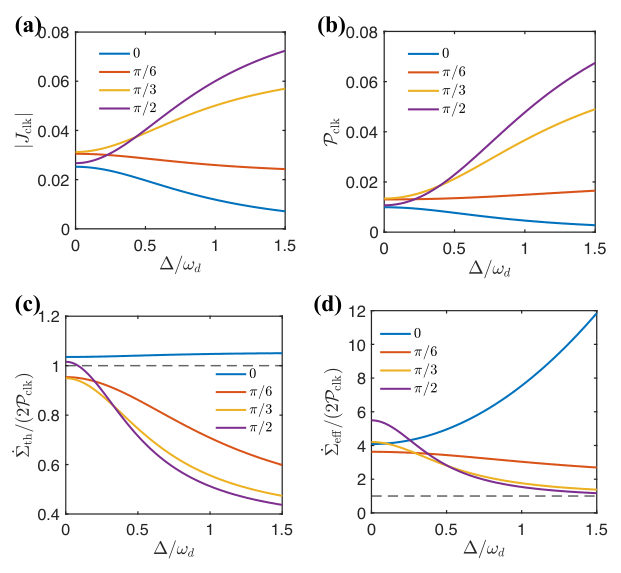
<figcaption class="paper-figure-caption"><b>Fig 5.</b> FIG. 5. Additional validation of the feedback-modified thermodynamic uncertainty relation in a driven three-level system. The system consists of three states |0⟩, |1⟩, and |2⟩. The hot bath couples |0⟩↔|2⟩, the cold bath couples |1⟩↔|2⟩, and a classical drive couples |0⟩↔|1⟩. Feedback is triggered by the cold-emission jump Lc,−: |2⟩→|1⟩, after which the conditional unitary Uϕ = exp[−iϕ(|0⟩⟨1| + |1⟩⟨0|)] rotates the {|0⟩, |1⟩} subspace. Different curves correspond to ϕ = 0, π/6, π/3, π/2, with ϕ = 0 giving the no-feedback reference. The horizontal axis is the normalized drive detuning ∆/ωd, where ωd = ωh −ωc. (a) Net output tick current Jclk = ˙Nh,+ −˙Nh,−, defined from hot-bath absorption...</figcaption>
</figure>
</div>

<p><strong>Summary.</strong> This work develops a theoretical framework showing that continuous quantum measurement and feedback can boost quantum sensing and clock accuracy in open systems. It derives a modified thermodynamic uncertainty relation proving that the achievable precision is limited not just by thermal dissipation, but also by the information cost associated with the feedback control itself.</p>
<p><strong>Why it may be interesting.</strong> It provides a rigorous, quantitative link between measurement back-action, non-equilibrium thermodynamics, and fundamental limits on precision, extending the standard fluctuation theorems to include active control mechanisms.</p>
<details>
<summary>Detailed structure</summary>
<p><strong>Main problem.</strong> The paper investigates how continuous quantum measurement and feedback control can enhance quantum metrology and clock precision in open quantum systems, particularly concerning the limits imposed by thermodynamics.</p>
<p><strong>Main result.</strong> Feedback enhances parameter estimation and clock precision beyond bounds set by reservoir entropy production alone, necessitating the inclusion of an information entropy cost from the feedback apparatus in the modified thermodynamic uncertainty relation.</p>
<p><strong>Method.</strong> The analysis employs full counting statistics derived from the tilted generator of the feedback-modified master equation, relating precision to the Fisher information and thermodynamic bounds to effective entropy production.</p>
<p><strong>Model / system.</strong> The framework is applied to open quantum systems, exemplified by a charge-monitored double quantum dot (DQD) coupled to thermal reservoirs, and generalized to a driven three-level system.</p>
<p><strong>Key observables.</strong> Fisher information ($F_{fb}$), clock precision ($P_{clk}$), reservoir entropy production ($\dot{\Sigma}_{th}$), and information entropy production ($\dot{\Sigma}_{info}^{fb}$).</p>
<p><strong>Important parameters / regimes.</strong> Feedback unitary angle ($\phi$), temperature ($T$), chemical potential ($\mu$), and detuning ($\Delta$).</p>
<p><strong>Assumptions / limitations.</strong> The analysis assumes unital jump feedback maps and relies on deriving the effective thermodynamic uncertainty relation by incorporating the information cost of the feedback process.</p>
<p><strong>Figures summary.</strong> Figures illustrate the enhancement of Fisher information and clock precision using feedback compared to no-feedback cases, and critically show that the reservoir-only TUR ratio falls below unity while the feedback-modified ratio remains above unity.</p>
<p><strong>Paper structure.</strong> The paper first establishes the theoretical framework using full counting statistics and the tilted generator for feedback-modified dynamics. It then applies this to parameter estimation (DQD) and clock stabilization, culminating in the derivation and validation of the feedback-modified Thermodynamic Uncertainty Relation using both electronic transport and general driven systems.</p>
</details>
<details>
<summary>Abstract</summary>
<p>Feedback can convert continuously monitored quantum jumps into a thermodynamic resource. We formulate full counting statistics for open quantum systems under unital jump feedback by incorporating the feedback maps into the tilted generator. The resulting trajectory ensemble determines both current fluctuations and the Fisher information of the measurement record. We show that feedback can enhance reservoir-parameter estimation and clock precision without necessarily changing average thermodynamic currents. This enhanced precision is not bounded by reservoir entropy production alone. By embedding the reduced dynamics in an enlarged measurement-feedback process, we derive a feedback-modified thermodynamic uncertainty relation in which the information entropy production of the feedback apparatus supplies the missing cost. A charge-monitored double quantum dot illustrates the framework: jump-conditioned feedback improves thermometry and chemical-potential sensing, and stabilizes a quantum clock defined by output-current ticks.</p>
</details>
<p><sub><a href="#top">↑ back to top</a></sub></p>

<p><a id="paper-2609.01017"></a></p>
<h3 id="nonlocal-wavefront-shaping-through-complex-media"><a href="http://arxiv.org/abs/2609.01017v1">Nonlocal wavefront shaping through complex media</a></h3>
<p><strong>Authors:</strong> Yanis Trouyet, Neelan Gounden, Pedro Ornelas, Patrick Cameron, Andrew Forbes, Hugo Defienne<br>
<strong>Type:</strong> experiment · <strong>Category:</strong> other · <strong>PDF:</strong> <a href="https://arxiv.org/pdf/2609.01017v1">https://arxiv.org/pdf/2609.01017v1</a><br>
<strong>Analysis basis:</strong> full PDF text, analyzed in chunks
<strong>Topic relevance:</strong> 🔥 <code>quantum optics experiment</code> <strong>4/5</strong> · <code>correlated / nonlocal dissipation</code> <strong>3/5</strong> · <code>interference shaping light</code> <strong>3/5</strong> · <code>quantum measurements</code> <strong>1/5</strong></p>
<div class="figure-strip-hint">↔ Scroll figures horizontally</div>
<div class="paper-figures-scroll">
<figure class="paper-figure-card">
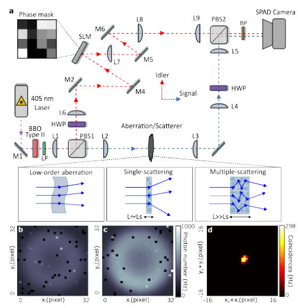
<figcaption class="paper-figure-caption"><b>Fig 1.</b> Figure 1: Experimental setup. (a) Spatially entangled photon pairs (810 nm) are generated via type-II spontaneous parametric down-conversion (SPDC) using a collimated 405 nm continuous-wave laser and a 1-mm β-barium borate (BBO) crystal. A 650 nm long-pass (LP) filter rejects the pump, and a polarizing beam splitter (PBS1) separates signal and idler photons. In the idler arm, a 4f system (L1 = 40 mm, L2 = 200 mm) images the crystal onto a spatial light modulator (SLM), which is Fourier-imaged onto a SPAD camera via a 4f setup (L6 = 100 mm, L7 = 100 mm) combined with lens L8 = 100 mm. In the signal arm, L1 and L2 image the crystal onto an aberrating or scattering medium (PDMS or Parafilm)....</figcaption>
</figure>
<figure class="paper-figure-card">
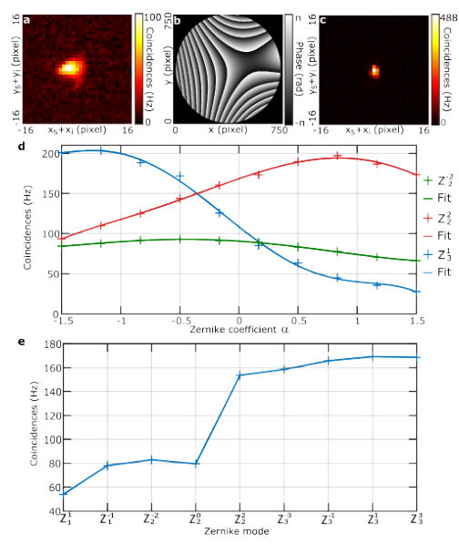
<figcaption class="paper-figure-caption"><b>Fig 2.</b> Figure 2: Experimental results for low-order aberrations. (a) Sum-coordinate projection of G(2)</figcaption>
</figure>
<figure class="paper-figure-card">
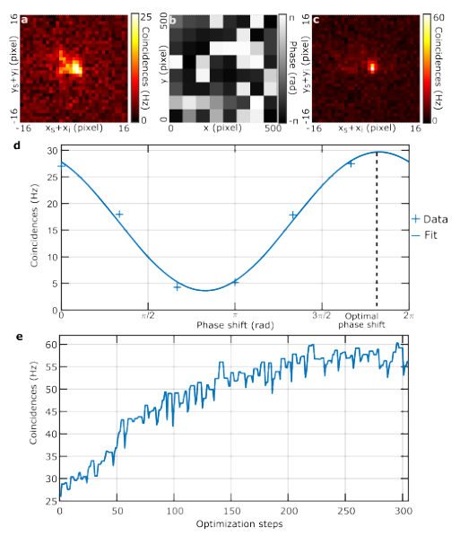
<figcaption class="paper-figure-caption"><b>Fig 3.</b> Figure 3: Experimental results for the single-scattering regime. (a) Sum-coordinate projection of G(2) acquired in the presence of the Parafilm layer with a flat phase applied to the SLM. (b) Final optimized phase mask. (c) Sum-coordinate projection of G(2) acquired with the optimized phase mask displayed on the SLM, demonstrating a partial restoration of spatial correlations between the photon pairs. (d) Central correlation value C0 as a function of the phase shift ∆θ applied to a randomly selected subset of macropixels, along with the corresponding cosine fit. (e) Optimization curve showing the evolution of C0 as a function of the number of optimization steps. For optimization, each G(2)...</figcaption>
</figure>
<figure class="paper-figure-card">
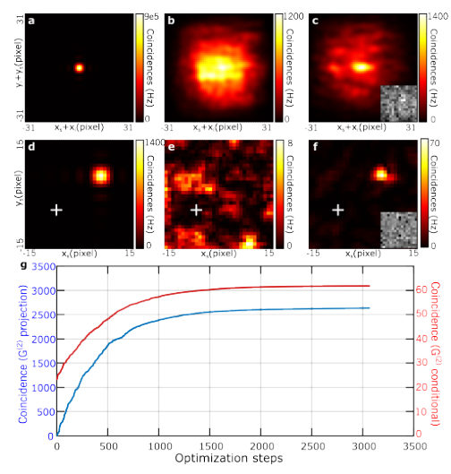
<figcaption class="paper-figure-caption"><b>Fig 4.</b> Figure 4: Simulation results for the multiple-scattering regime. Sum-coordinate projection of G(2) simulated (a) without the scattering medium, (b) with the scattering medium prior to optimization, and (c) after optimization. The optimal phase mask is shown in inset. Conditional correlation images G(2)(rs, −r0) for r0 = (−5, −7), simulated (d) without the scattering medium, (e) with the scattering medium prior to optimization, and (f) after optimization. The position of r0 is marked with a white cross and the corresponding optimal phase mask is shown in inset. (g) Optimization curves for focusing on the sum-coordinate projection of G(2) (blue) and on the conditional projection (red). The...</figcaption>
</figure>
</div>

<p><strong>Summary.</strong> This paper demonstrates nonlocal wavefront shaping by utilizing spatially entangled photon pairs to correct for scattering distortions in complex optical media. By applying phase corrections to one photon that avoids the scatterer, the system restores the spatial correlations of its entangled partner. This technique offers a pathway for compact imaging through otherwise inaccessible, highly scattering environments.</p>
<p><strong>Why it may be interesting.</strong> This work is highly relevant to quantum optics and open quantum systems, as it uses quantum entanglement to engineer wave propagation through highly lossy and complex media, effectively bypassing the need for in-situ active elements.</p>
<details>
<summary>Detailed structure</summary>
<p><strong>Main problem.</strong> The paper addresses the challenge of mitigating scattering in complex media for advanced imaging by overcoming the limitation of existing local wavefront correction techniques.</p>
<p><strong>Main result.</strong> The authors successfully demonstrated nonlocal wavefront shaping using spatially entangled photon pairs, restoring spatial correlations in all tested scattering regimes.</p>
<p><strong>Method.</strong> Nonlocal wavefront shaping is achieved by applying a phase correction to one photon (idler) that bypasses the scattering medium to compensate for distortions experienced by its entangled partner (signal) passing through the medium.</p>
<p><strong>Model / system.</strong> The experiment uses spatially entangled photon pairs generated via SPDC and tests the technique across three regimes: low-order aberrations (PDMS), single-scattering (Parafilm), and multiple-scattering (simulations).</p>
<p><strong>Key observables.</strong> Spatial Intensity Correlation Matrix G^(2)(r_i, r_s) and the central correlation value C_0, used to quantify the restoration of spatial correlations.</p>
<p><strong>Important parameters / regimes.</strong> Scattering mean free path (l_s), number of active SLM macropixels (N), and the measured enhancement ratio (e.g., $\eta \approx 2.4$ or $\eta = 49.5$).</p>
<p><strong>Assumptions / limitations.</strong> The analysis relies on the entanglement between photon pairs and the ability to physically decouple the wavefront correction from the scattering medium.</p>
<p><strong>Figures summary.</strong> Figures illustrate the experimental setup, showing restored $G^{(2)}$ projections under optimized vs. unoptimized conditions for aberrations and scattering media.</p>
<p><strong>Paper structure.</strong> The paper progresses by first establishing the problem of local correction, then detailing the nonlocal approach using entangled pairs, and finally presenting experimental results across low-order aberration, single-scattering, and multiple-scattering regimes.</p>
</details>
<details>
<summary>Abstract</summary>
<p>Wavefront shaping is a key technique for mitigating scattering in complex media, enabling advanced imaging and optical communication. Yet existing approaches are inherently local, requiring active correction elements - such as spatial light modulators or deformable mirrors - to lie directly in the optical path of the scattered light, which limits their integration into compact imaging systems. Here, we experimentally demonstrate nonlocal wavefront shaping using spatially entangled photon pairs. By applying a phase correction to a photon that never interacts with the scattering medium, we compensate for the distortions experienced by its entangled partner and restore their initial spatial correlations. Our approach physically decouples the wavefront correction from the scattering medium, paving the way for imaging through complex media in compact and otherwise inaccessible systems.</p>
</details>
<p><sub><a href="#top">↑ back to top</a></sub></p>

<p><a id="paper-2609.00167"></a></p>
<h3 id="encoding-compact-u1-gauge-fields-in-bosonic-modes-with-gkp-stabilization"><a href="http://arxiv.org/abs/2609.00167v1">Encoding Compact U(1) Gauge Fields in Bosonic Modes with GKP Stabilization</a></h3>
<p><strong>Authors:</strong> Victor Ale, Tommaso Rainaldi, Enrique Rico, Felix Ringer, George Siopsis<br>
<strong>Type:</strong> both · <strong>Category:</strong> quantum information and computing · <strong>PDF:</strong> <a href="https://arxiv.org/pdf/2609.00167v1">https://arxiv.org/pdf/2609.00167v1</a><br>
<strong>Analysis basis:</strong> full PDF text, analyzed in chunks
<strong>Topic relevance:</strong> 🔥 <code>analog quantum simulation</code> <strong>4/5</strong> · <code>QC/QI experiment</code> <strong>2/5</strong> · <code>quantum measurements</code> <strong>2/5</strong> · <code>Keldysh / 2PI / non-Gaussian methods</code> <strong>1/5</strong> · <code>methods for driven-dissipative</code> <strong>1/5</strong></p>
<div class="figure-strip-hint">↔ Scroll figures horizontally</div>
<div class="paper-figures-scroll">
<figure class="paper-figure-card">
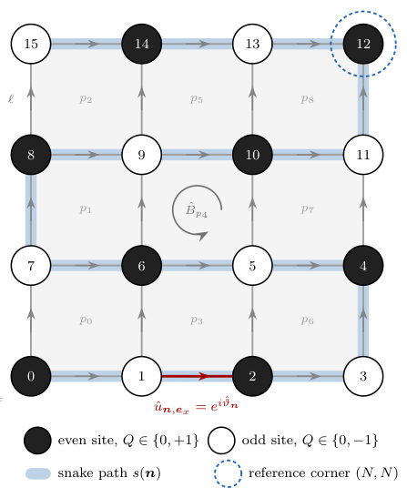
<figcaption class="paper-figure-caption"><b>Fig 1.</b> Figure 1. The lattice used throughout, drawn for N = 3. Filled and hollow sites carry the staggered charges of Eq. (2.5), each labeled by its snake index s(n) of Eq. (2.1), with the shaded band tracing the path that fixes the Jordan–Wigner string. Arrows orient the links ℓ, and the highlighted link carries the link element ˆun,ex = ei ˆϑn of the hopping term. Plaquettes are indexed by π(p) = pxN + py, the circular arrow on p4 giving the orientation of ˆBp, and the dashed ring marks the reference corner (N, N) where Gauss’s law closes.</figcaption>
</figure>
<figure class="paper-figure-card">
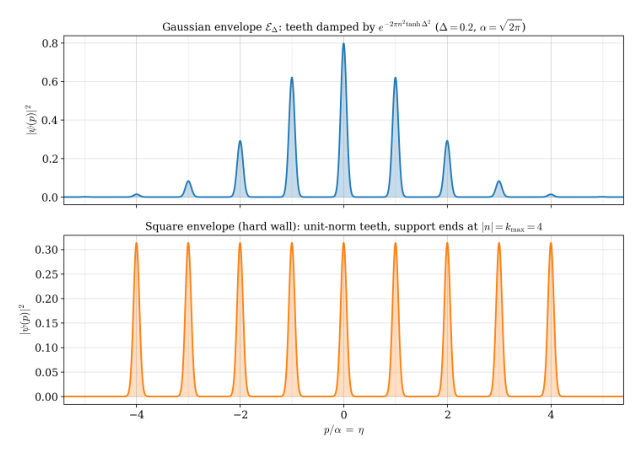
<figcaption class="paper-figure-caption"><b>Fig 2.</b> Figure 3. Momentum-space probability density of the non-ideal GKP-like qunaught state |∅⟩, which encodes the zero-angle state |χ = 0⟩of the compact rotor, at α = √</figcaption>
</figure>
<figure class="paper-figure-card">
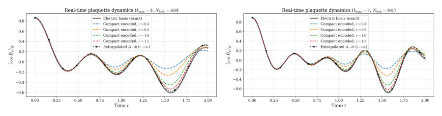
<figcaption class="paper-figure-caption"><b>Fig 3.</b> Figure 4. Plaquette expectation value for a single plaquette with no charges, comparing the compact theory ⟨χ = 0| eitH ˆU+ ˆU †</figcaption>
</figure>
<figure class="paper-figure-card">
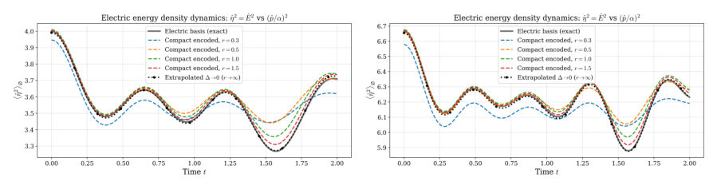
<figcaption class="paper-figure-caption"><b>Fig 4.</b> Figure 5. As Fig. 4, for the electric energy ˆη2 7→(ˆp/α)2, at r = 0.3, 0.5, 1, 1.5 and extrapolated to r →∞(∆→0). Left: kmax = 3, Nfock = 169. Right: kmax = 4, Nfock = 301. Here g = 1 and α = √</figcaption>
</figure>
<figure class="paper-figure-card">
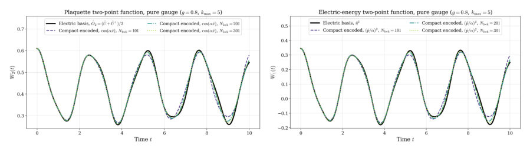
<figcaption class="paper-figure-caption"><b>Fig 5.</b> Figure 6. Real part of the ground-state two-point functions W1,2(t) = ⟨GS| ˆO1,2(t) ˆO1,2(0) |GS⟩for one plaquette in the pure-gauge sector, with ˆO1 = ˆη2 7→(ˆp/α)2 and ˆO2 = ( ˆU + ˆU †)/2 7→cos(αˆx). Left: the magnetic correlator Re W2. Right: the electric correlator Re W1. Each panel overlays the electric- basis and compact-encoded results, which agree to within the truncation, and the two observables are related by Eq. (5.3). Here g = 0.8 and kmax = 5.</figcaption>
</figure>
</div>

<p><strong>Summary.</strong> This paper details a method to simulate compact U(1) gauge theories on bosonic quantum hardware by employing a GKP stabilizer to enforce necessary compactness. The authors derive error-mitigation protocols and successfully apply the framework to calculate the energy splitting related to monopole physics in QED3. It represents a significant step in realizing lattice gauge theory simulations on continuous-variable quantum computers.</p>
<p><strong>Why it may be interesting.</strong> This work directly tackles the hardware-software interface for simulating fundamental condensed matter models, providing concrete, error-mitigated protocols for mapping topological physics onto continuous-variable quantum hardware.</p>
<details>
<summary>Detailed structure</summary>
<p><strong>Main problem.</strong> The paper addresses the fundamental challenge of encoding compact lattice gauge theories, which use angular variables, onto continuous, unbounded bosonic quantum hardware.</p>
<p><strong>Main result.</strong> They successfully construct an encoding using GKP stabilizers that maps the compact theory to bosonic modes, and they demonstrate error mitigation techniques allowing recovery of key physical observables.</p>
<p><strong>Method.</strong> The methodology involves developing a one-to-one encoding, applying GKP stabilizers to enforce compactness, and using quantum simulation techniques like Trotterization and spectral analysis to extract physical information.</p>
<p><strong>Model / system.</strong> The system is compact U(1) gauge fields, specifically applied to compact QED3 on a lattice. The dynamics are governed by a Kogut–Susskind Hamiltonian, analyzed after solving Gauss's law.</p>
<p><strong>Key observables.</strong> Twist Energy ($\Delta_{tw}$), energy splitting between charge sectors, and various correlators used for spectral function reconstruction.</p>
<p><strong>Important parameters / regimes.</strong> Squeezing parameter (finite vs. infinite limit), lattice size ($N$), and the error parameter ($\Gamma$) used for extrapolation.</p>
<p><strong>Assumptions / limitations.</strong> The analysis assumes that imperfections manifest as computable shifts rather than uncontrolled leakage, and that extrapolation techniques can reliably remove finite-squeezing biases.</p>
<p><strong>Figures summary.</strong> Figures illustrate the lattice structure, the path for Gauss's law closure, and the general setup for the quantum simulation.</p>
<p><strong>Paper structure.</strong> The paper progresses from establishing the encoding (mapping compact variables to bosonic modes via GKP stabilizers) to analyzing the resulting Hamiltonian dynamics in different computational frames (Loop vs. Link basis), and finally detailing advanced measurement protocols for error-corrected spectral measurements.</p>
</details>
<details>
<summary>Abstract</summary>
<p>Compact lattice gauge theories are formulated in terms of angular variables and integer electric fluxes, while bosonic quantum hardware provides oscillator modes with continuous, unbounded quadratures. We bridge this gap with a one-to-one encoding. After Gauss's law is solved, each remaining gauge degree of freedom is carried by a single oscillator mode, with its interactions built from trigonometric gates, and a Gottesman--Kitaev--Preskill (GKP)-type stabilizer provides the compactness that the hardware does not. The encoding becomes exact in the limit of infinite squeezing, and at finite squeezing, the leading imperfections act as small, computable shifts of physical observables rather than uncontrolled leakage. We apply the construction to compact QED$_3$ and derive the error budget at finite squeezing, characterizing the leading errors in closed form, and showing that they can be corrected, subtracted, or extrapolated away. We construct syndrome-extraction protocols that detect and remove the displacement component of photon loss, delimit the noise it does not reach, compare two choices of dynamical variables, and collect the scaling of mode count, gate count, and measurement cost. A one-plaquette example reproduces the exact compact-rotor dynamics, and real-time spectroscopy with controlled extrapolations recovers the exponentially small energy splitting between charge sectors, the seed of the monopole physics of the theory, at the percent level against its exact value.</p>
</details>
<p><sub><a href="#top">↑ back to top</a></sub></p>

<p><a id="paper-2609.01248"></a></p>
<h3 id="a-backend-agnostic-mwis-kernel-for-stochastic-unit-commitment-with-neutral-atom-hardware-validation"><a href="http://arxiv.org/abs/2609.01248v1">A Backend-Agnostic MWIS Kernel for Stochastic Unit Commitment with Neutral-Atom Hardware Validation</a></h3>
<p><strong>Authors:</strong> Jiying Chen, Min Lin, Jingwei Wen, Zhihong Zhang, Chuixiong Wu<br>
<strong>Type:</strong> both · <strong>Category:</strong> other · <strong>PDF:</strong> <a href="https://arxiv.org/pdf/2609.01248v1">https://arxiv.org/pdf/2609.01248v1</a><br>
<strong>Analysis basis:</strong> full PDF text, analyzed in chunks
<strong>Topic relevance:</strong> 🔥 <code>QC/QI experiment</code> <strong>4/5</strong> · <code>Rydberg arrays</code> <strong>3/5</strong> · <code>analog quantum simulation</code> <strong>2/5</strong></p>
<div class="figure-strip-hint">↔ Scroll figures horizontally</div>
<div class="paper-figures-scroll">
<figure class="paper-figure-card">
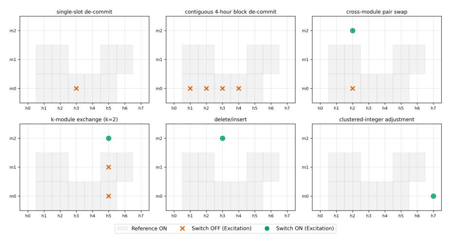
<figcaption class="paper-figure-caption"><b>Fig 1.</b> Figure 1: Move vocabulary—six move types populating the excitation active space, covering single-slot, block, cross-module, exchange, delete/insert, and clustered-integer perturbations.</figcaption>
</figure>
<figure class="paper-figure-card">
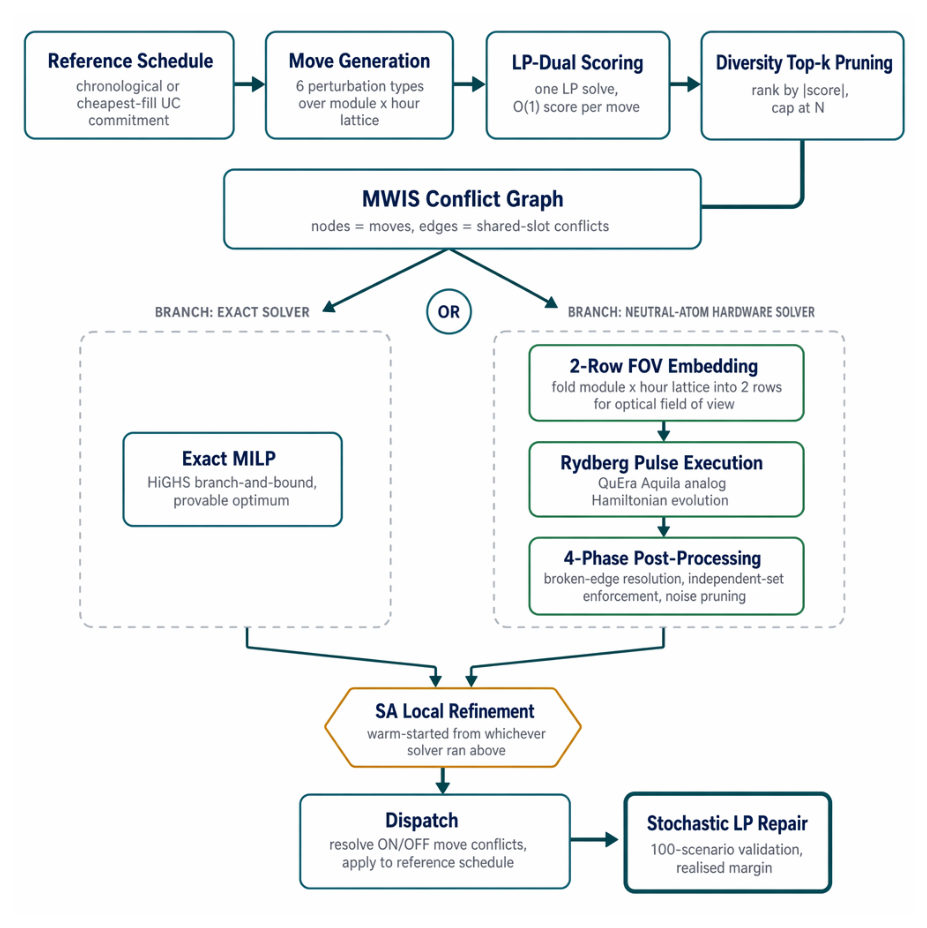
<figcaption class="paper-figure-caption"><b>Fig 2.</b> Figure 2: Hybrid pipeline architecture—reference schedule, move generation, LP-dual scoring, diversity top-k pruning, an exact-solver/neutral-atom-hardware branch point (exact MILP via HiGHS, or AHS hardware with 2-row FOV embedding and 4-phase post-processing, Section 2.3), converging into a common SA local refinement stage, dispatch application, and 100-scenario stochastic LP repair validation.</figcaption>
</figure>
<figure class="paper-figure-card">
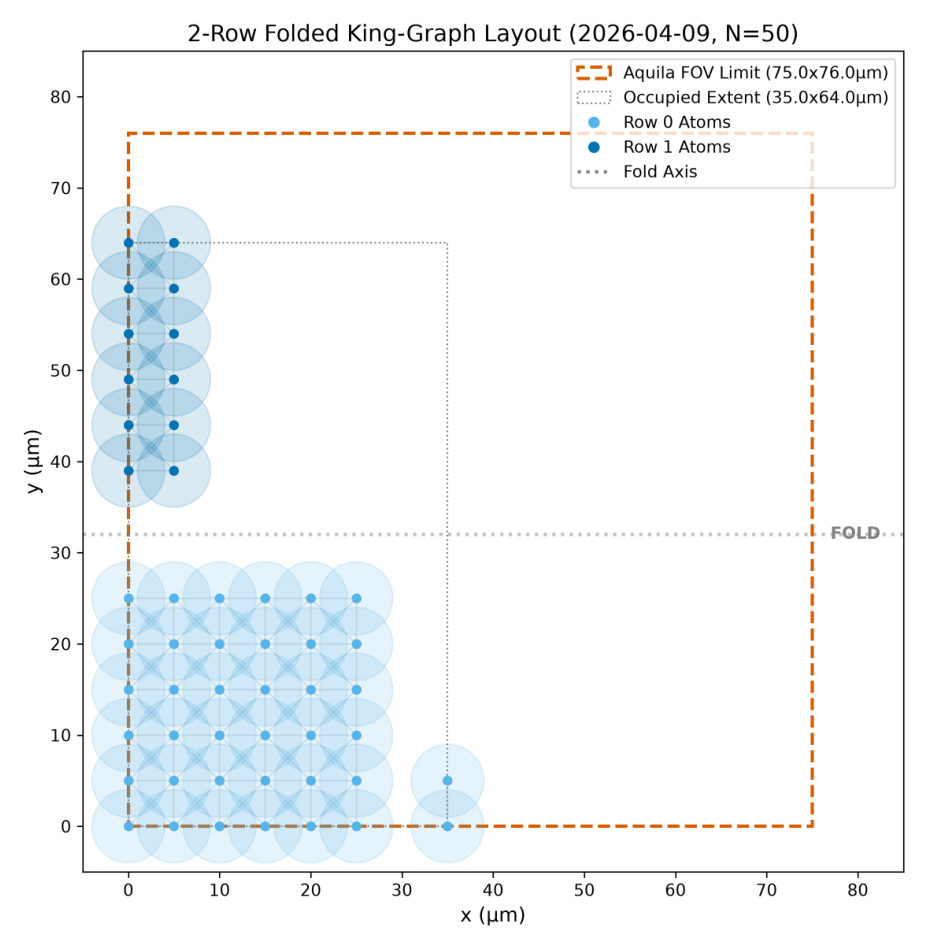
<figcaption class="paper-figure-caption"><b>Fig 3.</b> Figure 3: 2-row folded King-graph layout for the N = 50 instance on Day 1. The temporal axis is compressed into two stacked rows. Atoms are coloured by row assignment (sky blue for Row 0, blue for Row 1). The orange dashed rectangle marks Aquila’s 75 × 76 µm hardware FOV limit; the grey dotted rectangle marks this instance’s occupied extent (35 × 64 µm)—the layout uses well under half of the available FOV. This day’s span-minimising split lands on a natural gap in the occupied-hour distribution, so no inter-row edges are broken. The two atoms isolated at x ≈35 µm (bottom right) are an artefact of top-k diversity pruning (Section 2.1): hour 11 survives pruning for two modules while hour 10...</figcaption>
</figure>
<figure class="paper-figure-card">
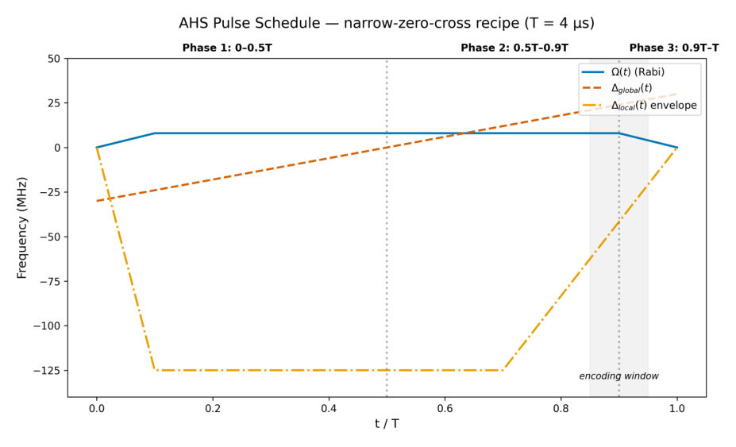
<figcaption class="paper-figure-caption"><b>Fig 4.</b> Figure 4: AHS pulse schedule for the winning narrow-zero-cross recipe (T = 4 µs)—Rabi frequency Ω(t), global detuning ∆global(t), and local detuning envelope ∆local(t) over normalised time t/T, annotated with the three physical phases and the narrow encoding window.</figcaption>
</figure>
<figure class="paper-figure-card">
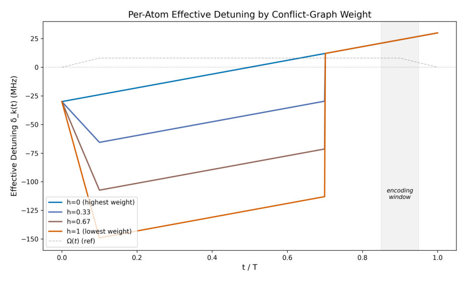
<figcaption class="paper-figure-caption"><b>Fig 5.</b> Figure 5: Per-atom effective detuning δk(t) = ∆global(t) + hk ∆local(t) for four representative weight classes (hk = 0, 0.33, 0.67, 1—highest to lowest conflict-graph weight), illustrating the local-detuning bias mechanism of Eq. (7) under the narrow-zero-cross schedule. High-weight atoms (hk →0) track ∆global(t) alone and cross into positive (excitation-favouring) detuning early in Phase 2; low-weight atoms (hk →1) retain a strong negative offset that delays their crossing, creating the weight-dependent separation that the freeze at t/T = 0.9 reads out.</figcaption>
</figure>
</div>

<p><strong>Summary.</strong> This paper presents a novel, hardware-agnostic framework to solve Stochastic Unit Commitment by translating it into a Maximum-Weight Independent Set (MWIS) problem. The authors validate this workflow end-to-end on a neutral-atom quantum processor, showing that the quantum-enhanced approach yields results matching or exceeding classical benchmarks. It highlights the current physical limitations of scaling on these quantum hardware platforms.</p>
<p><strong>Why it may be interesting.</strong> This work provides a concrete, industrial-scale demonstration of mapping a complex, real-world optimization problem onto a specific quantum hardware modality (neutral atoms), directly addressing the gap between theoretical quantum algorithms and practical application.</p>
<details>
<summary>Detailed structure</summary>
<p><strong>Main problem.</strong> The paper addresses the challenge of integrating structured combinatorial optimization problems, like Stochastic Unit Commitment (UC), onto near-term quantum hardware.</p>
<p><strong>Main result.</strong> The proposed end-to-end workflow successfully demonstrates that hardware-generated solutions match or exceed exact classical solutions on a 15-day campaign, establishing a viable computational pathway.</p>
<p><strong>Method.</strong> It compiles the discrete decision layer of UC into a move-based Maximum-Weight Independent Set (MWIS) problem, which is then mapped onto a neutral-atom quantum processor using the Rydberg blockade mechanism.</p>
<p><strong>Model / system.</strong> The physical platform is the QuEra Aquila neutral-atom quantum processor. The problem is modeled as finding an independent set in a weighted conflict graph derived from scheduling moves in a green hydrogen electrolyser park.</p>
<p><strong>Key observables.</strong> Hardware-generated dispatch margins, AHS-post ratio (quality of quantum result vs. exact MWIS), and the valid-shot rate for scaling analysis.</p>
<p><strong>Important parameters / regimes.</strong> The primary bottleneck for scaling is identified as the probability that the full atom array survives, rather than the graph embedding itself.</p>
<p><strong>Assumptions / limitations.</strong> The approach assumes that the MWIS representation is backend-agnostic, and that classical post-processing (LP repair, SA) can compensate for hardware imperfections.</p>
<p><strong>Figures summary.</strong> Figures illustrate the six defined move types and summarize the trend showing the collapse of the valid-shot rate as the problem size increases, while other metrics remain stable.</p>
<p><strong>Paper structure.</strong> The paper details a hybrid pipeline: classical move generation $\rightarrow$ graph encoding/folding $\rightarrow$ quantum solving (AHS) $\rightarrow$ classical post-processing (SA/LP repair) $\rightarrow$ final validation against the original stochastic LP.</p>
</details>
<details>
<summary>Abstract</summary>
<p>Quantum hardware is beginning to address structured combinatorial optimisation, but two steps still block practical use: mapping real operational models onto hardware-compatible instances, and converting noisy hardware output back into feasible decisions. Here we introduce a backend-agnostic computational interface that compiles the discrete decision layer of stochastic unit commitment into a move-based maximum-weight independent set (MWIS) problem, while retaining continuous dispatch and feasibility recovery in the classical computational layer. We validate the approach in a green hydrogen scheduling setting and deploy it on the QuEra Aquila neutral-atom quantum processor. This is the first end-to-end industrial scheduling workflow that connects real operational decisions to programmable neutral-atom hardware through a solver-agnostic MWIS representation. Across a 15-day hardware campaign on 50-node instances, hardware-generated solutions after classical refinement match or exceed the dispatch margins obtained from exact MWIS on every day. When scaling to 144 nodes, encoding quality remains stable, while the probability that the full atom array survives, rather than graph embedding, emerges as the dominant bottleneck to further scaling. Together, these results establish a hardware-compatible computational pathway toward larger problem scales, and lay the groundwork for exploring regimes in which exact classical optimisation may no longer scale efficiently.</p>
</details>
<p><sub><a href="#top">↑ back to top</a></sub></p>

<p><a id="paper-2609.00169"></a></p>
<h3 id="exact-learning-of-quantum-noise-with-tensor-networks"><a href="http://arxiv.org/abs/2609.00169v1">Exact learning of quantum noise with tensor networks</a></h3>
<p><strong>Authors:</strong> Nicola Pancotti, Vedika Saravanan, Krysta Svore<br>
<strong>Type:</strong> both · <strong>Category:</strong> quantum information and computing · <strong>PDF:</strong> <a href="https://arxiv.org/pdf/2609.00169v1">https://arxiv.org/pdf/2609.00169v1</a><br>
<strong>Analysis basis:</strong> full PDF text, analyzed in chunks
<strong>Topic relevance:</strong> 🔥 <code>QC/QI experiment</code> <strong>4/5</strong> · <code>methods for driven-dissipative</code> <strong>3/5</strong> · <code>quantum measurements</code> <strong>2/5</strong></p>
<div class="figure-strip-hint">↔ Scroll figures horizontally</div>
<div class="paper-figures-scroll">
<figure class="paper-figure-card">
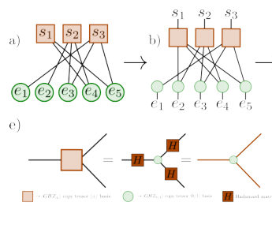
<figcaption class="paper-figure-caption"><b>Fig 1.</b> Figure 1: Mapping from the Tanner graph to a tensor-network decoder. a) The Tanner graph with syndrome nodes s1, s2, s3 (orange squares) and error nodes e1, . . . , e5 (green circles). b) Each error node becomes a |GHZ0/1⟩copy tensor (green) and each syndrome node a |GHZ±⟩copy tensor (orange). c) Inserting Hadamard matrices H on the bonds between syndrome and error tensors con- verts all copy tensors to the same (|0/1⟩) basis, as explained in e). d) A noise model PN(e) is attached to the error legs, adding a new tensor that encodes the fault-event probabilities. e) Identity: a |GHZ±⟩copy tensor equals a |GHZ0/1⟩ copy tensor dressed with Hadamard matrices on each leg. f) Full decoder net-...</figcaption>
</figure>
<figure class="paper-figure-card">
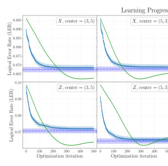
<figcaption class="paper-figure-caption"><b>Fig 2.</b> Figure 3: Learning progress for a distance-3 surface code with 3 rounds of syndrome extraction. Top row: X logical observable. Bottom row: Z logical observable. Each panel corresponds to a different center qubit position on the device. The logical error rate (LER, left axis) decreases as a function of the optimization iteration, converging towards the baseline set by Google’s detector error model (DEM). The mean squared error (MSE, right axis, green) between the learned noise parameters θ and the DEM parameters is shown on a logarith- mic scale. The MSE follows a clear downward trend throughout the training, indicating that the optimization not only improves decoding performance but also...</figcaption>
</figure>
<figure class="paper-figure-card">
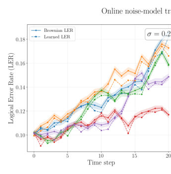
<figcaption class="paper-figure-caption"><b>Fig 3.</b> Figure 4: Online noise-model tracking under synthetic device drift for a distance- 3 surface code with 3 rounds. The noise model evolves over 20 time steps along a Brownian motion in logit space (Eq. (25)) with drift amplitude σ = 0.2 (left) and σ = 0.3 (right). Five independent random seeds are shown, each as a different color. For each seed, solid lines with circles (“Brownian LER”) show the LER of a decoder with perfect knowledge of the true drifted noise model, while dashed lines with squares (“Learned LER”) show the LER of the online- learned model, which is warm-started from the previous time step. The learned model tracks the true baseline closely across all seeds, even under the...</figcaption>
</figure>
</div>

<p><strong>Summary.</strong> This paper introduces a variational framework to learn quantum noise models directly from syndrome and logical observable data collected during quantum error correction experiments. By minimizing the binary cross-entropy loss, the method achieves an information-theoretically optimal noise estimate. This approach is highly valuable because it allows for continuous, real-time tracking of device noise drifts without requiring dedicated offline characterization.</p>
<p><strong>Why it may be interesting.</strong> It provides a powerful, data-driven methodology to characterize complex noise processes in quantum hardware directly from operational measurements, bypassing the need for idealized, separate characterization protocols.</p>
<details>
<summary>Detailed structure</summary>
<p><strong>Main problem.</strong> The core challenge is accurately characterizing quantum noise models for high-performance quantum error correction (QEC) without relying on dedicated, separate characterization experiments.</p>
<p><strong>Main result.</strong> The proposed variational framework successfully recovers noise models whose logical error rates match independently characterized results, and it can track device drifts in real time.</p>
<p><strong>Method.</strong> The noise model is learned by formulating the problem as a variational optimization, minimizing the binary cross-entropy between the decoder's predictions and measured logical outcomes.</p>
<p><strong>Model / system.</strong> The work applies to quantum error-correcting codes, using circuit-level data from hardware like Google's Sycamore processor, and is mathematically formalized using tensor networks for decoding.</p>
<p><strong>Key observables.</strong> Logical Error Rate (LER), syndrome data, and logical observable outcomes.</p>
<p><strong>Important parameters / regimes.</strong> Variational noise parameters ($ heta$), device drift amplitude ($\sigma$), and the code distance.</p>
<p><strong>Assumptions / limitations.</strong> The objective function is proven to be principled, minimizing the cross-entropy achieves the information-theoretic minimum LER, and the method is generally applicable to any stabilizer code.</p>
<p><strong>Figures summary.</strong> Figure 3 shows the convergence of LER and MSE during training on a distance-3 surface code. Figure 4 demonstrates the online tracking of noise drift over time steps.</p>
<p><strong>Paper structure.</strong> The paper introduces the variational framework, proves its information-theoretic optimality, instantiates it using tensor networks for exact gradient calculation, validates it on hardware data, and demonstrates real-time tracking of device drift.</p>
</details>
<details>
<summary>Abstract</summary>
<p>Accurate noise models are essential for high-performance quantum error correction, yet characterizing the noise of a quantum device typically requires dedicated experiments. We present a variational framework that learns the noise model directly from quantum-error-correction syndrome and logical-observable data collected during error-corrected memory experiments. The fault-event probabilities are treated as variational parameters and optimized via gradient descent to minimize the binary cross-entropy between the decoder's predictions and experimental logical-observable outcomes. We prove that this objective is principled rather than ad hoc: a sufficiently expressive noise ansatz attains the information-theoretic minimum logical error rate. We instantiate this framework using a tensor-network decoder, which provides exact maximum-likelihood decoding and analytically differentiable gradients with respect to all noise parameters. Using circuit-level data from Google's Sycamore processor, and starting from an uninformed prior, the optimization recovers noise models whose logical error rates agree to within $2\%$ with those of Google's independently characterized detector error model. The mean squared error between the learned and reference noise parameters shows a clear overall decrease throughout training, confirming that the method recovers physically meaningful noise structure, not merely parameters that happen to decode well. We further demonstrate that the optimization can track device drifts in real time via warm-started updates, maintaining near-optimal decoding performance under synthetically evolving noise without the need for re-characterization. The approach is decoder-agnostic in its formulation and naturally extends to correlated noise models.</p>
</details>
<p><sub><a href="#top">↑ back to top</a></sub></p>

<p><a id="paper-2609.01334"></a></p>
<h3 id="fast-microwave-free-state-preparation-and-measurement-of-superconducting-qubits"><a href="http://arxiv.org/abs/2609.01334v1">Fast Microwave-free State Preparation and Measurement of Superconducting Qubits</a></h3>
<p><strong>Authors:</strong> R. Abraham, F. Amet, P. Anderson, M. Arrigo, J. Arteaga, C. J. Ballard, C. Barker, T. Barnes, P. Bechman, R. Bhatt, K. Blaine, T. M. Borman, J. Botimer, G. R. Boyd, P. Bradley, A. D. Brandon, T. K. Bristol, A. Bulkos, R. M. Burnett, D. Burrowes, D. N. Cakan, N. Carniero, T. Chamberlin, D. Chen, M. Chilcote, B. G. Christensen, I. Christie, J. Clark, D. Clarke, J. M. Cochran, J. C. Collini, K. Connolly, G. Costa, D. Cowger, B. Dalfort, D. Davies, S. Deitemeyer, N. DeNigris, F. Densmore, S. J. Di Giacomo, S. G. Diamond, R. DiCiro, S. M. Disseler, K. Dixon, J. Donnelly, E. Donohue, M. Downing, B. Eastin, N. Edwards, M. Ehsani, S. Ellis, R. Epstein, D. Ferguson, P. Fischer, S. Friedensen, D. Gabriel, M. A. Gettelman, A. Gillam, G. Gilmore, J. Goode, E. Goodwin, M. Gottschalk, A. L. Graninger, T. Graves-Abe, J. Hackley, N. Hartman, B. Heacock, B. Heischmidt, P. Helms, R. Hinkey, B. Hong, S. T. Howard, D. Jensen, N. Johns, D. R. Johnson, J. Johnson, H. Kaplan, Z. Keane, S. Keebaugh, C. Kegerreis, K. Kelcourse-Oquendo, M. S. Khalil, D. Killeen, A. S. Knutson, T. Kohler, M. Kornecki, F. Koutsouli, A. Krick, K. L. Krycka, J. Kuan, D. Lad, J. R. Lane, N. J. Laurita, A. C. Lee, A. R. Lemmon, E. M. Leonard, L. M. D. Leonard, J. Leventis, M. P. Lilly, A. Lisewski, L. Llano, M. Longo, C. Lostoski, Z. Lou, M. G. Loving, D. al Ludwig, N. Luhrs, J. L. Lund, K. A. Maddock, R. J. Magyar, K. Mahmud, T. A. Manning, A. I. Marakov, A. D. McCreary, P. F. McLaughlin, J. R. Medford, E. Metz, A. L. Middleton, A. Miklich, R. Miller, J. Mlack, M. Mucci, N. Mungo, T. Murphy, R. E. Murray, O. Naaman, J. Nakamura, M. Noevere, S. Novikov, M. E. Nowakowski, C. Nunez, K. N. Ogg, B. Oshokoya, D. Paz, A. Pesetski, T. Pillsbury, C. Pinion, A. D. Pitcock, A. J. Przybysz, P. Quarterman, D. Queen, I. Ramos, S. L. Reed, D. Reitz, M. Rennie, S. Reza, B. Richman, K. H. Rigdon, C. Rotella, M. Rudolph, E. Sadler, T. Safford, D. Saha, A. E. Saia, D. I. Santiago, R. Schwartz, A. Schwarzkopf, M. Scott-Jones, S. L. Sendelbach, S. J. Shapiro, A. N. Sharma, M. E. Sherwin, A. Sierakowski, J. N. Sills, R. Simha, N. Siwak, J. Smith, C. Snyder, H. Solomon, N. S. Sperlein, L. St. Marie, K. Stalpes, S. F. Steers, Z. Stegen, R. M. Stein, T. I. Stephenson, M. Stoutimore, J. D. Strand, J. A. Strong, E. Swain, S. Swami, A. Tamang, I. Thompson, A. B. Tokarchik, N. Tralshawala, D. Tran, S. Tyler, L. Upton, G. Van Dyke, J. Vannucci, K. Vempati, J. S. Vogel, R. Vyas, M. Wagner, P. Warner, N. Washington, B. Way, M. A. Wayne, D. Wehella-Gamage, M. E. Weippert, T. Weitzel, J. Wenner, L. White, S. Whitsitt, A. Wilkinson, R. Willey, I. Yandow, J. Yang, L. Yu, F. Yumiceva, V. Zheng, R. Zimmerman, C. Zinn, J. Ziskind<br>
<strong>Type:</strong> experiment · <strong>Category:</strong> quantum information and computing · <strong>PDF:</strong> <a href="https://arxiv.org/pdf/2609.01334v1">https://arxiv.org/pdf/2609.01334v1</a><br>
<strong>Analysis basis:</strong> full PDF text, analyzed in chunks
<strong>Topic relevance:</strong> 🔥 <code>QC/QI experiment</code> <strong>4/5</strong> · <code>quantum measurements</code> <strong>3/5</strong></p>
<div class="figure-strip-hint">↔ Scroll figures horizontally</div>
<div class="paper-figures-scroll">
<figure class="paper-figure-card">
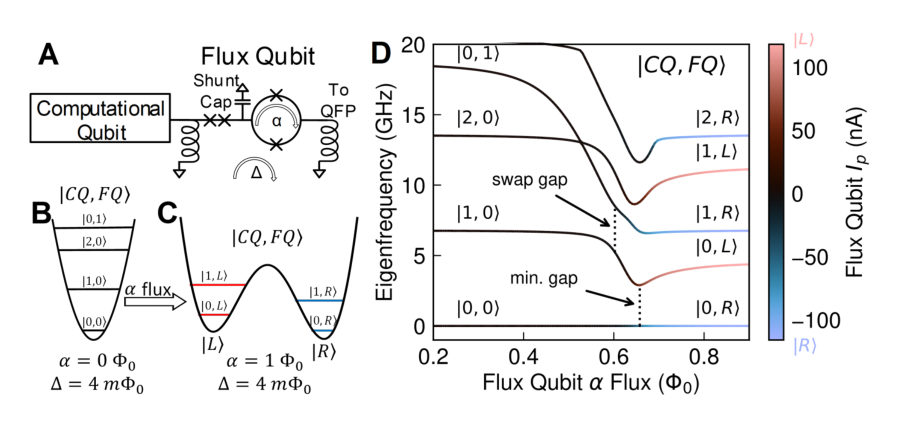
<figcaption class="paper-figure-caption"><b>Fig 1.</b> FIG. 1. Converting a qubit state to a circulating current. (A) The flux qubit (FQ) used for readout with an inductive coupling to the computational qubit (CQ). (B) Illustration of the FQ potential with plasmon-like states at α = 0 (C) Double-well potential of the FQ at α = Φ0 and ∆= 4 mΦ0. The states in different wells have opposite circulating currents. The ∆flux breaks the degeneracy between the wells. (D) Model device eigenspectrum as a function of annealing flux, α, with ∆= 4 mΦ0. States are labeled in the |CQ, FQ⟩basis at the beginning and end of the readout process. The first excited state maintained a large energy separation from other levels the annealing process, which allowed the...</figcaption>
</figure>
<figure class="paper-figure-card">
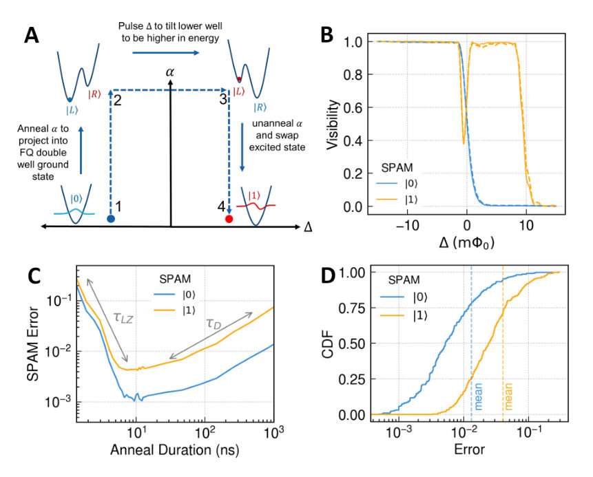
<figcaption class="paper-figure-caption"><b>Fig 2.</b> FIG. 2. High-fidelity state preparation and measurement using a flux qubit. (A) Rapid adiabatic passage preparation (RAP prep) of an excited state in the computational qubit (CQ) using a flux qubit (FQ). Beginning in the ground state (1), the FQ was annealed to project the state into the |L⟩well (1→2). Then the double-well potential was tilted until the prepared well became the excited state (2→3). The FQ was then unannealed, transitioning back to a single-well potential and swapping the photon into the CQ (3→4). (B) FQ readout calibration plot showing high-fidelity state preparation and measurement (SPAM) across a robust calibration window. The dashed lines are time-dependent simulations...</figcaption>
</figure>
<figure class="paper-figure-card">

<figcaption class="paper-figure-caption"><b>Fig 3.</b> Fig. 3B shows the results of a Ramsey experiment where we prepared the CQ along X, delayed for some time and then read out along X. We observed the expected Ramsey oscillation with a decay time, T ∗ 2 = 24.0(6) µs, and found that the frequency of the oscilla- tion matched the f01 of the CQ that we measured with microwave spectroscopy (see supplemental information Fig. S1B) when we accounted for the timing resolution of</figcaption>
</figure>
<figure class="paper-figure-card">

<figcaption class="paper-figure-caption"><b>Fig 4.</b> FIG. 3. Superposition State Preparation. (A) RAP preparation of a computational qubit (CQ) in a quantum superposition state using a coupled flux qubit (FQ). First the FQ was annealed to project the ground state to the |L⟩well (1→2). Then the double-well potential was tilted until the two wells were degenerate (2→3). The FQ was then unannealed, transitioning back to a single-well potential and splitting the state into a superposition of |0⟩and |1⟩in the CQ (3→4). (B) Microwave-free spectroscopy of the CQ frequency as a function of a tunable flux bias. Shown here as the FFT of a Ramsey signal acquired using the protocol depicted in A. (C) Coherent Ramsey oscillation of a superposition state...</figcaption>
</figure>
<figure class="paper-figure-card">

<figcaption class="paper-figure-caption"><b>Fig 5.</b> FIG. 4. Signal Amplification for On-Chip Logic. (A) Transi- tioning the quantum state of the computational qubit (CQ) into a DC circulating current in the flux qubit (FQ) produced circulating currents of order 100 nA. In order to amplify this current until it was large enough to be converted to a digital signal, a series of QFPs were used, each with increasing crit- ical current. The QFPs could then be coupled to an Analog- to-Digital Converter (ADC) (in the fashion shown here), or to a flux tunable circuit element such as a tunable resonator. (B) State assignment error of the two QFP chain as a func- tion of the QFP anneal time. Both QFPs could be annealed in &lt;2.5 ns while maintaining low...</figcaption>
</figure>
</div>

<p><strong>Summary.</strong> This paper presents a breakthrough in superconducting qubit control by demonstrating microwave-free state preparation and measurement. By coupling a computational qubit to a flux qubit, the authors achieve high-fidelity operations in timescales an order of magnitude faster than previous methods. This advancement significantly improves the scalability and performance metrics critical for building practical quantum computers.</p>
<p><strong>Why it may be interesting.</strong> This work directly addresses the engineering bottlenecks in superconducting quantum computing by proposing a fundamentally faster, microwave-free readout mechanism, which is highly relevant to open quantum systems and quantum control theory.</p>
<details>
<summary>Detailed structure</summary>
<p><strong>Main problem.</strong> The primary challenge is developing fast, high-fidelity, and scalable state preparation and measurement (SPAM) protocols for superconducting qubits, as current methods are limited by slow microwave signals and long measurement times.</p>
<p><strong>Main result.</strong> The authors demonstrated microwave-free SPAM for superconducting qubits with fidelities exceeding 99% in extremely fast timescales (e.g., 10 ns for readout), an order of magnitude improvement over state-of-the-art techniques.</p>
<p><strong>Method.</strong> The work employs adiabatic quantum evolution, utilizing a coupled Computational Qubit (CQ) and a Flux Qubit (FQ) to perform state transfer and readout without external microwave driving.</p>
<p><strong>Model / system.</strong> The system involves superconducting qubits, specifically a CQ coupled to an FQ. The readout mechanism relies on an adiabatic swap of the quantum state into the FQ, followed by an anneal that converts the quantum state into a measurable classical circulating current.</p>
<p><strong>Key observables.</strong> Fidelity (&gt;99%), readout time ($\sim 10$ ns), quantum-to-digital conversion time (15 ns), and coherence time ($T_2^*$).</p>
<p><strong>Important parameters / regimes.</strong> The process is governed by balancing competing timescales: the Landau-Zener transition rate ($  au_{LZ}$) versus the intrinsic decay rate ($   au_D$), with optimal operation occurring around 10 ns.</p>
<p><strong>Assumptions / limitations.</strong> The method assumes compatibility with scalable superconducting digital control systems (SFQ electronics) and relies on the adiabatic nature of the state transfer process.</p>
<p><strong>Figures summary.</strong> Figures illustrate the adiabatic process of state conversion from the CQ to the FQ, the implementation of Rapid Adiabatic Passage (RAP) for preparation, and the use of Quantum Flux Parametrons (QFPs) for signal amplification.</p>
<p><strong>Paper structure.</strong> The paper progresses by first identifying the limitations of current SPAM techniques, then detailing the novel CQ/FQ coupled system and the RAP preparation protocol, followed by the readout mechanism involving adiabatic swapping and current projection, and finally discussing error sources like TLS loss.</p>
</details>
<details>
<summary>Abstract</summary>
<p>Fast, high-fidelity, scalable state preparation and measurement is critical to the realization of a quantum computing system. The state-of-the-art methods for preparation and readout of superconducting qubits require finely tuned microwave signals and ~100 ns of measurement time, which are major obstacles to the scalability and performance of superconducting quantum computers. Here, we have demonstrated novel, microwave-free methods for both preparation and readout of superconducting qubits with &gt;99% fidelity in only 10 ns for either operation while maintaining qubit coherence. This technology is compatible with scalable superconducting digital control systems, and using quantum flux parametrons for amplification, we demonstrated full quantum-to-digital conversion in only 15 ns, which is an order of magnitude faster than state-of-the-art microwave-based techniques.</p>
</details>
<p><sub><a href="#top">↑ back to top</a></sub></p>

<p><a id="paper-2609.00343"></a></p>
<h3 id="generation-of-multicomponent-schrodinger-cat-states-in-schemes-with-measurement-of-gaussian-states"><a href="http://arxiv.org/abs/2609.00343v1">Generation of multicomponent Schrödinger cat states in schemes with measurement of Gaussian states</a></h3>
<p><strong>Authors:</strong> E. A. Nesterova, S. B. Korolev<br>
<strong>Type:</strong> theory · <strong>Category:</strong> quantum information and computing · <strong>PDF:</strong> <a href="https://arxiv.org/pdf/2609.00343v1">https://arxiv.org/pdf/2609.00343v1</a><br>
<strong>Analysis basis:</strong> full PDF text, analyzed in chunks
<strong>Topic relevance:</strong> 🔥 <code>quantum measurements</code> <strong>4/5</strong> · <code>Full counting statistics</code> <strong>1/5</strong> · <code>quantum optics experiment</code> <strong>1/5</strong></p>
<div class="figure-strip-hint">↔ Scroll figures horizontally</div>
<div class="paper-figures-scroll">
<figure class="paper-figure-card">

<figcaption class="paper-figure-caption"><b>Fig 1.</b> Figure 1: Scheme for generating states based on the measurement of a four-mode Gaussian state. In the figure, S𝑖 denotes the 𝑖-th quantum oscillator prepared in a squeezed vacuum state, PNRD denotes a photon-number-resolving detector, and Ψ𝑜𝑢𝑡is the generated state.</figcaption>
</figure>
<figure class="paper-figure-card">

<figcaption class="paper-figure-caption"><b>Fig 2.</b> Figure 2: Scheme for generating 4-states. In the figure, S1 and S2 are two orthogonally squeezed vacuum states with squeezing parameter 𝑟1 ∈R, 𝑆3 and 𝑆4 are two orthogonally squeezed vacuum states with squeezing parameter 𝑟2 ∈R, BS𝑖are beam splitters with transmittance 𝑡𝑖, the blue rectangles denote phase shifters, PNRD stands for a photon-number-resolving detector, and Ψ𝑜𝑢𝑡is the generated state.</figcaption>
</figure>
<figure class="paper-figure-card">

<figcaption class="paper-figure-caption"><b>Fig 3.</b> Figure 3: (a) Fidelity ℱ(𝛽, 𝑝) (solid curves) and ℱ𝑚𝑎𝑥 4 (𝛽, 𝑝) (dashed curves) as a function of amplitude 𝛽for different numbers of superposition terms 𝑝. (b) Enlarged image of the region indicated by the red dashed rectangle.</figcaption>
</figure>
<figure class="paper-figure-card">

<figcaption class="paper-figure-caption"><b>Fig 4.</b> Figure 4: (a) Fidelity between the compass state and the state starting from the fourth Fock state as a function of 𝛽 for different numbers of superposition terms. (b) Fidelity between the compass state and the state starting from the eighth Fock state as a function of 𝛽for different numbers of superposition terms.</figcaption>
</figure>
<figure class="paper-figure-card">

<figcaption class="paper-figure-caption"><b>Fig 5.</b> Figure 5: Fidelity of the compass state as a function of amplitude for three cases: the superposition starts from the vacuum state (blue, 𝑛= 8, 𝑚= 16), from the fourth Fock state (orange, 𝑛= 7, 𝑚= 18), and from the eighth Fock state (green, 𝑛= 6, 𝑚= 20).</figcaption>
</figure>
</div>

<p><strong>Summary.</strong> This paper details a quantum optical protocol for generating high-fidelity multicomponent Schrödinger cat states (e.g., 4-state, 8-state) by measuring photon numbers in multimode Gaussian states. The scheme uses squeezed vacuum states and beam splitters, demonstrating that fidelity can approach theoretical limits, although the probability of generating higher-order states decreases rapidly.</p>
<p><strong>Why it may be interesting.</strong> This work provides a concrete, experimentally relevant protocol for creating complex quantum states (cat states) that are highly sought after for quantum computation and quantum metrology, directly linking measurement theory to state preparation.</p>
<details>
<summary>Detailed structure</summary>
<p><strong>Main problem.</strong> The paper proposes a probabilistic scheme to generate high-fidelity multicomponent Schrödinger cat states, specifically focusing on 4-component and 8-component superpositions.</p>
<p><strong>Main result.</strong> The scheme successfully generates states approximating the target cat states with fidelities approaching the theoretical maximum, although the generation probability decreases rapidly for higher components.</p>
<p><strong>Method.</strong> The generation relies on performing photon-number-resolving measurements on multimode Gaussian states, which are prepared using squeezed vacuum states and beam splitters.</p>
<p><strong>Model / system.</strong> The system involves multimode Gaussian states, which are manipulated using linear optical elements (beam splitters) and measured using Photon-Number-Resolving Detectors (PNRDs). The target states are superpositions of Fock states, known as Schrödinger cat states.</p>
<p><strong>Key observables.</strong> Fidelity ($\mathcal{F}$), generation probability ($\mathcal{P}$), and the expansion coefficients of the generated state across Fock number basis states.</p>
<p><strong>Important parameters / regimes.</strong> The state is characterized by parameters $A$ and $B$ for 4-states, and the process involves optimizing over several physical parameters $\{r_1, r_2, t_1, t_2, \phi\}$ and the coherent state amplitude $eta$.</p>
<p><strong>Assumptions / limitations.</strong> The analysis assumes the ability to perform PNR measurements and relies on deriving the optimal parameter configurations to maximize fidelity.</p>
<p><strong>Figures summary.</strong> Figures illustrate the generation schemes (e.g., using two pairs of squeezed states for 4-states) and compare the achieved fidelity ($\mathcal{F}$) against the theoretical maximum ($\mathcal{F}_{	ext{max}}$) as a function of the number of superposition terms ($p$).</p>
<p><strong>Paper structure.</strong> The paper first introduces the general scheme for 4-states using PNR measurements on Gaussian states. It then details a specialized, optimized scheme for 4-states, followed by the extension to 8-states by mixing two 4-states. Finally, it discusses the recursive generalization to higher-order states and analyzes the trade-off between fidelity and generation probability.</p>
</details>
<details>
<summary>Abstract</summary>
<p>In this work, we propose a scheme for generating superpositions of Fock states whose numbers differ by four or eight. The proposed protocol is based on photon-number-resolving measurements on multimode Gaussian states. We compare of the generated states with multicomponent Schrödinger cat states. We evaluate the fidelity and determine how it scales with the number of detected particles. Furthermore, we derive the optimal configuration for the generation such states.</p>
</details>
<p><sub><a href="#top">↑ back to top</a></sub></p>

<p><a id="paper-2609.00772"></a></p>
<h3 id="superconducting-flux-memory-for-cryogenic-applications"><a href="http://arxiv.org/abs/2609.00772v1">Superconducting Flux Memory for Cryogenic Applications</a></h3>
<p><strong>Authors:</strong> Tony X. Zhou, John McFarland, Aruna N. Ramanayaka, Brian Sears, Colin Stack, Aref Fouladi, Robert Smith, Sambarta Rakshit, Zachary A. Stegen, Keith D. Hillaire, Moe Khalil, Robert M. Young, David G. Ferguson, Anthony J. Przybysz, John X. Pryzbysz, Mark Covington, Gregory R Boyd, Jeremy Clark, Aaron Pesetski<br>
<strong>Type:</strong> experiment · <strong>Category:</strong> quantum information and computing · <strong>PDF:</strong> <a href="https://arxiv.org/pdf/2609.00772v1">https://arxiv.org/pdf/2609.00772v1</a><br>
<strong>Analysis basis:</strong> full PDF text, analyzed in chunks
<strong>Topic relevance:</strong> 🔥 <code>QC/QI experiment</code> <strong>4/5</strong> · <code>quantum measurements</code> <strong>1/5</strong></p>
<div class="figure-strip-hint">↔ Scroll figures horizontally</div>
<div class="paper-figures-scroll">
<figure class="paper-figure-card">

<figcaption class="paper-figure-caption"><b>Fig 1.</b> Fig. 1. Flux memory technology and schematics of the three types of flux memory. (a) Flux memory cell stores flux as memory and can provide flux bias to another superconducting device. (b) The SJJ, also known as RF SQUID, (c) Flux Lock with 2 or more JJs (d) Cryotron activated flux memory. Inset: an orange dash-lined box indicates the symbol for an ‘htron’ consisting a nearby resistive heater and a constriction.</figcaption>
</figure>
<figure class="paper-figure-card">

<figcaption class="paper-figure-caption"><b>Fig 2.</b> Fig. 2. A schematic of the proposed 2D addressing scheme with horizontal and vertical control lines</figcaption>
</figure>
<figure class="paper-figure-card">

<figcaption class="paper-figure-caption"><b>Fig 3.</b> Fig. 3. An SJJ flux memory SPICE simulation. The circuit schematic and key equations used in simulation are shown on the right of each panel for two SJJ circuit variants: (a) Flux drive with a mutual connection between the cell and control current. The rails indicating maximum memory value are drawn as horizontal lines and annotated in red. (b) Flux drive with a galvanic connection between the cell and control current. An allowed drive-response example contour is traced out as the black thickened line for a possible programmable memory operation. The maximum memory value annotated in red. Two allowed drive-response example contours for (a) and (b) are traced out as black thickened lines for...</figcaption>
</figure>
<figure class="paper-figure-card">

<figcaption class="paper-figure-caption"><b>Fig 4.</b> Fig. 4. Schematic of the tunable resonator flux detector. There is an independent bias line to verify that the tunable resonator yielded and functions above the SQUID, otherwise the SQUID bias comes from the flux memory through a mutual inductor. The SQUID can be thought of as a tunable inductance, thus shifting the resonant frequency of the LC-circuit comprised of a SQUID and resonator when flux is applied to its loop.</figcaption>
</figure>
<figure class="paper-figure-card">

<figcaption class="paper-figure-caption"><b>Fig 5.</b> Fig. 5. Experimental demonstration of a single SJJ flux memory cell operation. We use a flux detector to monitor the flux at the memory cell output. (a) Forward sweep of a current into the 𝛼 control line. The data indicates the initial flux state at the 0 mA 𝛼- urrent. “B kw r s” sweep long the x-axis from high 𝛼-current to low along the same parameter range and steps as in (a). The data indicates the final flux state of the cell at the 0 mA 𝛼 current after completing the hysteretic loop in parameter sweep. Repeated signals are an artifact periodicity of the flux detector.</figcaption>
</figure>
</div>

<p><strong>Summary.</strong> This paper reports on the design and experimental validation of superconducting flux memory devices intended to provide persistent, on-chip flux biasing for superconducting qubits. By developing three distinct memory types, the authors demonstrate a scalable method to reduce external control wiring complexity. The successful demonstration of stable flux biasing for over 20 hours paves the way for larger, more integrated quantum processors.</p>
<p><strong>Why it may be interesting.</strong> The development of robust, on-chip, and persistent control elements like flux memory is crucial for scaling up quantum processors, directly impacting the feasibility of large-scale quantum computation architectures.</p>
<details>
<summary>Detailed structure</summary>
<p><strong>Main problem.</strong> The paper addresses the need for on-chip, persistent flux biasing sources for superconducting quantum circuits, such as qubits, to reduce the complexity of external control wiring.</p>
<p><strong>Main result.</strong> The authors successfully developed and demonstrated three types of flux memory (SJJ, Flux Lock, Htron) that can store a stable DC flux bias for extended periods (over 20 hours), enabling scalable qubit control.</p>
<p><strong>Method.</strong> The research involves developing superconducting circuits, simulating their behavior using SPICE, and experimentally characterizing the programmable flux storage and output using in-situ flux detectors.</p>
<p><strong>Model / system.</strong> The core system is superconducting flux memory, implemented in three forms: Single Josephson Junction (SJJ), Flux Lock (requiring two JJs), and a Josephson Junction-free Cryotron (htron). These are designed to store persistent currents in superconducting loops.</p>
<p><strong>Key observables.</strong> Stored flux (measured in units of flux quanta, $\Phi_0$), qubit state tunability frequency, and the achievable step size of the flux bias.</p>
<p><strong>Important parameters / regimes.</strong> The ability to scale control lines from $N^2$ to $2N$ in a 2D array is a key parameter demonstrating scalability. The stability time of 20 hours is a critical performance metric.</p>
<p><strong>Assumptions / limitations.</strong> The primary limitations noted are the potential energy barrier depth limiting storage, and that the current simulation does not include kinetic inductance effects.</p>
<p><strong>Figures summary.</strong> Figures illustrate the schematics of the three memory types, the proposed 2D addressing scheme, and experimental results showing the flux biasing of a transmon qubit with stable frequency shifts over time.</p>
<p><strong>Paper structure.</strong> The paper introduces the problem of control line scaling, details the three memory architectures (SJJ, Flux Lock, Htron), presents the methods for programming and characterizing each type, and culminates in experimental demonstrations of using the memory to bias and tune a transmon qubit.</p>
</details>
<details>
<summary>Abstract</summary>
<p>We report the development of flux memory for use with superconducting circuits. This technology stores persistent currents in superconducting loops on-chip to be used to provide flux biasing for superconducting circuits, like qubits. We developed three types of flux memory and draw comparisons among them for circuit design. We demonstrate the utility of flux memory by using an in-situ flux detector and characterize each approach and further demonstrate that once flux is set in a memory cell, benchtop DC control sources can be powered off, leaving the on-chip flux bias in place. We propose that flux memory can be arranged in a two-dimensional configuration to multiplex control signals and reduce how line counts scale (N^2 devices -&gt; 2N control lines), and our experimental results pave the path to the proposed scalability. We demonstrate the use of flux memory to flux bias a transmon qubit and show the tunability of the qubit state to a target frequency which remained stable on-chip for 20 hours.</p>
</details>
<p><sub><a href="#top">↑ back to top</a></sub></p>

<p><a id="paper-2609.00125"></a></p>
<h3 id="temporal-signature-of-bosonic-stimulation-induced-by-dark-exciton-in-a-two-photon-pumped-polariton-condensate"><a href="http://arxiv.org/abs/2609.00125v1">Temporal Signature of Bosonic Stimulation Induced by Dark Exciton in a Two-photon Pumped Polariton Condensate</a></h3>
<p><strong>Authors:</strong> Nadav Landau, Dmitry Panna, Sarit Feldman, Sebastian Brodbeck, Christian Schneider, Sven Höfling, Alex Hayat<br>
<strong>Type:</strong> both · <strong>Category:</strong> quantum gases · <strong>PDF:</strong> <a href="https://arxiv.org/pdf/2609.00125v1">https://arxiv.org/pdf/2609.00125v1</a><br>
<strong>Analysis basis:</strong> full PDF text, analyzed in chunks
<strong>Topic relevance:</strong> <code>Tavis-Cummings &amp; cavity-many-emitter</code> <strong>3/5</strong> · <code>analog quantum simulation</code> <strong>3/5</strong> · <code>driven-dissipative phase transition</code> <strong>3/5</strong> · <code>methods for driven-dissipative</code> <strong>3/5</strong> · <code>quantum optics experiment</code> <strong>3/5</strong> · <code>Keldysh / 2PI / non-Gaussian methods</code> <strong>2/5</strong> · <code>correlated / nonlocal dissipation</code> <strong>2/5</strong> · <code>non-equilibrium universality</code> <strong>2/5</strong> · <code>Dicke superradiance</code> <strong>1/5</strong> · <code>quantum measurements</code> <strong>1/5</strong> · <code>superradiant laser</code> <strong>1/5</strong></p>
<div class="figure-strip-hint">↔ Scroll figures horizontally</div>
<div class="paper-figures-scroll">
<figure class="paper-figure-card">

<figcaption class="paper-figure-caption"><b>Fig 1.</b> FIG. 1. Illustration of the experiment and modelled dynamics. (a) In-plane dispersions of the 2p (teal) and 1s (dark green) exciton branches together with the LP branch (purple), showing the one- and two-photon pumped condensation dynamics studied in our work, including the rate equation state groups and terms used in our model (see Supplemental Material [38]). A background population of excitons (𝑛𝐵) is initially generated in the region of our one- (two-) photon pump spot (B, red), composed of one- (two-) photon allowed exciton states and excitons diffused from remote areas, and is schematically introduced in the band diagram. It then feeds a very high 𝑘∥ LP reservoir 𝐴 at a rate 𝑊𝐵→𝐴 via...</figcaption>
</figure>
<figure class="paper-figure-card">

<figcaption class="paper-figure-caption"><b>Fig 2.</b> FIG. 2. Time-resolved LP condensate PL for several 1s exciton-cavity detuning energies ∆ and at T ≅6K, for both one- (a)-(d) and two-photon (e)-(h) pumping. The PL (color) in each panel is normalized and log-scaled for better visibility, with the color code indicated on top. All cases were extracted for a similar integrated PL value above the condensation threshold, with the resulting one- and two-photon threshold-normalized excitation powers shown on each plot. In all cases, the emission is initially blueshifted by several meV, depending on the LP exciton fraction, and then reduces back down on a timescale of several hundred ps. This is associated with the background exciton population in...</figcaption>
</figure>
<figure class="paper-figure-card">

<figcaption class="paper-figure-caption"><b>Fig 3.</b> FIG. 3. Condensate-induced blueshift buildup (a) and relaxation (b) rates (in ns−1) as a function of the LP ground state exciton fraction |𝑋0|2. Rates are extracted from the data for both one- (red) and two- photon (blue) pumping at all four detunings in the experiment, and fitted to 𝑦= 𝐴(1 −𝑥) + 𝐵𝑥+ 𝐶𝑥2 with 𝑥= |𝑋0|2 (dashed-gold and dashed-green lines, respectively). Fits constraining B and C to zero for the one- and two-photon pumped buildup rates, respectively, reflect the assumed dominant stimulation channel in each case and confirm the expected trend, which is clearly stronger for one-photon pumping. For the relaxation rates, the dynamics are less trivial, and all three fitting...</figcaption>
</figure>
</div>

<p><strong>Summary.</strong> This paper uses time-resolved spectroscopy on polariton condensates to probe the mechanisms driving bosonic stimulation. By comparing one-photon and two-photon pumping, the authors find that the dynamics are governed by different scattering processes. This suggests a novel dark state-mediated stimulation channel that could be crucial for highly-efficient THz lasing.</p>
<p><strong>Why it may be interesting.</strong> This work directly addresses non-equilibrium many-body dynamics in a controllable quantum optical system, providing quantitative evidence for multiple, distinct bosonic stimulation channels in a solid-state condensate.</p>
<details>
<summary>Detailed structure</summary>
<p><strong>Main problem.</strong> The study investigates the temporal signature of bosonic stimulation induced by dark excitons within a polariton condensate, comparing the dynamics under one-photon versus two-photon pumping.</p>
<p><strong>Main result.</strong> A distinct difference in the detuning dependence of the buildup and relaxation rates is observed between the two pumping schemes, suggesting a new dark state-originated stimulation channel in the two-photon case.</p>
<p><strong>Method.</strong> The research combines time-resolved photoluminescence spectroscopy with fitting the measured buildup and relaxation rates to a quadratic function of the condensate exciton fraction.</p>
<p><strong>Model / system.</strong> The physical system is a strongly-coupled light-matter exciton-polariton condensate in a semiconductor microcavity. The dynamics are modeled using a semi-classical Boltzmann rate equation approach.</p>
<p><strong>Key observables.</strong> Buildup and relaxation rates of the condensate-induced blueshifts, measured as a function of the LP ground state exciton fraction (|X_0|^2).</p>
<p><strong>Important parameters / regimes.</strong> Detuning ($\Delta$), temperature ($T \sim 6$ K), and the ratio of one-photon vs. two-photon pumping excitation energies.</p>
<p><strong>Assumptions / limitations.</strong> The analysis assumes that the observed rate dependencies can be captured by fitting the rates to a quadratic function of the exciton fraction, and that the model captures the dominant scattering mechanisms.</p>
<p><strong>Figures summary.</strong> Figures illustrate the experimental setup, angle-resolved PL measurements across the condensation threshold for both pumping types, and plots showing the extracted buildup and relaxation rates as a function of |X_0|^2 for comparison.</p>
<p><strong>Paper structure.</strong> The paper establishes the physical platform and the goal of comparing one- and two-photon pumping. It presents time-resolved measurements of the blueshift dynamics, analyzes the detuning dependence of the rates, and concludes by interpreting the differences in rate dependence as evidence for distinct stimulation channels.</p>
</details>
<details>
<summary>Abstract</summary>
<p>Strongly-coupled light-matter exciton-polaritons constitute an on-chip solid-state platform where the macroscopic quantum phenomenon of condensation is not only achievable at elevated temperatures, but can also be optically controlled, including through their interaction with inaccessible "dark" states. A recent study has shown that polariton condensation can be established under nonlinear two-photon pumping, paving the way towards dark state-condensate coherent control and highly-efficient terahertz (THz) lasing. In this letter, we show for the first time a temporal signature of dark exciton induced bosonic stimulation by investigating one- and two-photon pumped condensation with time-resolved photoluminescence spectroscopy. Our results show a clear difference in the detuning dependence of the buildup and relaxation rates of the condensate-induced blueshifts under one- and two-photon pumping. This difference is associated with the stronger exciton-fraction dependence expected for one-photon pumped condensation, where polariton-polariton stimulation dominates, compared with two-photon pumped condensation, where a 2p-exciton-to-lower-polariton THz transition can provide another stimulation channel, together with various spin-flip, electron-hole exchange and phonon-based mechanisms. These observations indicate the presence of a new dark state originated stimulation channel that could facilitate highly-efficient THz lasing in semiconductor microcavities.</p>
</details>
<p><sub><a href="#top">↑ back to top</a></sub></p>

<p><a id="paper-2609.00368"></a></p>
<h3 id="chiral-phonons-driven-by-chiral-cavities"><a href="http://arxiv.org/abs/2609.00368v1">Chiral phonons driven by chiral cavities</a></h3>
<p><strong>Authors:</strong> V. A. S. V. Bittencourt, N. Shabala, R. M. Geilhufe, A. Metelmann<br>
<strong>Type:</strong> theory · <strong>Category:</strong> other · <strong>PDF:</strong> <a href="https://arxiv.org/pdf/2609.00368v1">https://arxiv.org/pdf/2609.00368v1</a><br>
<strong>Analysis basis:</strong> full PDF text, analyzed in chunks
<strong>Topic relevance:</strong> <code>analog quantum simulation</code> <strong>3/5</strong> · <code>correlated / nonlocal dissipation</code> <strong>3/5</strong> · <code>driven-dissipative phase transition</code> <strong>3/5</strong> · <code>methods for driven-dissipative</code> <strong>3/5</strong> · <code>Keldysh / 2PI / non-Gaussian methods</code> <strong>2/5</strong> · <code>Tavis-Cummings &amp; cavity-many-emitter</code> <strong>2/5</strong> · <code>non-equilibrium universality</code> <strong>2/5</strong> · <code>quantum measurements</code> <strong>1/5</strong></p>
<div class="figure-strip-hint">↔ Scroll figures horizontally</div>
<div class="paper-figures-scroll">
<figure class="paper-figure-card">

<figcaption class="paper-figure-caption"><b>Fig 1.</b> FIG. 1: Chiral Phonons generated by a coherently driven chiral cavity (in blue). The material hosting chi- ral phonons, associated with the circular motion of the crystal’s ions (represented here illustratively), is loaded in a chiral cavity, and supports phonon modes with a definite handedness (in red). The cavity mode is coher- ently driven with a monochromatic tone of amplitude ε at frequency Ω.</figcaption>
</figure>
<figure class="paper-figure-card">

<figcaption class="paper-figure-caption"><b>Fig 2.</b> FIG. 2: Imbalance between left and right-handed phonons generated by a coherently driven chiral cav- ity. (a) Maximum imbalance as a function of the cavity-phonon coupling. The gray area indicates g &gt; p</figcaption>
</figure>
<figure class="paper-figure-card">

<figcaption class="paper-figure-caption"><b>Fig 3.</b> FIG. 3: Chiral Phonons generated by a coherently driven linear cavity. In this case, the cavity has to sup- port two degenerate modes that are linearly polarized. Such modes have to be driven with independent drives that have a relative phase.</figcaption>
</figure>
</div>

<p><strong>Summary.</strong> This paper proposes using a driven electromagnetic cavity as a novel platform to generate a steady-state population of chiral phonons. By modeling the cavity-phonon interaction, the authors demonstrate that this setup can induce a measurable, persistent effective magnetic field, offering a powerful tool to study phonon-mediated magnetism without relying on transient light pulses.</p>
<p><strong>Why it may be interesting.</strong> This work is highly relevant to AMO physics and open quantum systems because it models the coherent, driven coupling between two distinct quantum subsystems (photons/cavity modes and phonons) to engineer a macroscopic quantum response (magnetization) in a steady state.</p>
<details>
<summary>Detailed structure</summary>
<p><strong>Main problem.</strong> The primary goal is to generate a steady-state population of chiral phonons, which carry angular momentum, to study the phono-magnetic effect, bypassing the limitations of transient excitation methods.</p>
<p><strong>Main result.</strong> The authors demonstrate that using a driven electromagnetic cavity can generate a steady-state, non-zero effective phonon-induced magnetic field ($    ext{B}_{    ext{eff}}$) with realistic drive power.</p>
<p><strong>Method.</strong> The methodology involves deriving the general interaction Hamiltonian between the cavity electromagnetic field and the chiral phonon modes, followed by solving the driven-dissipative dynamics using the Heisenberg-Langevin equation.</p>
<p><strong>Model / system.</strong> The system is a material hosting chiral phonons coupled to a driven electromagnetic cavity. The model utilizes the cavity-phonon interaction Hamiltonian, $\hat{H}_{ac}$, and considers both chiral and linear cavity configurations.</p>
<p><strong>Key observables.</strong> Effective magnetic field ($    ext{B}_{    ext{eff}}$), steady-state phonon population imbalance ($n_L - n_R$), and the phonon-cavity coupling rate ($g_k$).</p>
<p><strong>Important parameters / regimes.</strong> Optimal coupling strength ($g_{opt}$), cavity decay rates ($\kappa_a, \kappa_c$), and external drive power ($P$).</p>
<p><strong>Assumptions / limitations.</strong> The analysis assumes the small sample-cavity volume ratio ($V_s \ll V_c$) and employs the Rotating Wave Approximation (RWA) for the dynamics.</p>
<p><strong>Figures summary.</strong> Figures illustrate the interaction between chiral phonons and the cavity field, showing the dependence of phonon population imbalance on coupling strength and detuning, and visualizing the resulting polariton frequencies.</p>
<p><strong>Paper structure.</strong> The paper progresses from establishing the need for steady-state generation to deriving the general interaction Hamiltonian, applying this to chiral and linear cavity setups, solving the resulting driven-dissipative dynamics, and finally calculating the resulting effective magnetic field.</p>
</details>
<details>
<summary>Abstract</summary>
<p>Lattice vibrations carrying angular momentum give rise to fundamental phenomena such as the phonon Hall effect and the Einstein-de Haas effect, offering new opportunities for manipulating angular momentum in condensed-matter systems. Generating such circularly polarized phonons requires either the use of an external magnetic field, or of polarized light pulses. The latter approach does not require the use of any magnetic response of the material, but it has limitations, in particular regarding the duration of the pulse. Consequently, any effect stemming from phonons generated by light pulses is transient. In this paper, we propose the use of a driven electromagnetic cavity as a route to generate a steady-state population of chiral phonons. We derive a general description of cavity-chiral phonon interaction, with a particular focus on modes of chiral cavities. We show that, under optimized conditions, a significant effective phonon-induced magnetic field can be generated by means of an external drive with realistic power. Our approach is specially tailored for Gamma point phonons with THz frequencies, and opens a new route for investigating chiral phonons with electromagnetic cavities.</p>
</details>
<p><sub><a href="#top">↑ back to top</a></sub></p>

<p><a id="paper-2609.01239"></a></p>
<h3 id="exceptional-points-in-photonics-from-non-hermitian-physics-to-applications"><a href="http://arxiv.org/abs/2609.01239v1">Exceptional Points in Photonics: From Non-Hermitian Physics to Applications</a></h3>
<p><strong>Authors:</strong> Fan Zhang, Nikolay Solodovchenko, Dmitrii N. Maksimov, Xuchen Wang, Mingzhao Song, Filippo Capolino, C. T. Chan, Andrey Bogdanov<br>
<strong>Type:</strong> theory · <strong>Category:</strong> other · <strong>PDF:</strong> <a href="https://arxiv.org/pdf/2609.01239v1">https://arxiv.org/pdf/2609.01239v1</a><br>
<strong>Analysis basis:</strong> full PDF text, analyzed in chunks
<strong>Topic relevance:</strong> <code>analog quantum simulation</code> <strong>3/5</strong> · <code>correlated / nonlocal dissipation</code> <strong>3/5</strong> · <code>driven-dissipative phase transition</code> <strong>3/5</strong> · <code>methods for driven-dissipative</code> <strong>3/5</strong> · <code>Keldysh / 2PI / non-Gaussian methods</code> <strong>2/5</strong> · <code>interference shaping light</code> <strong>2/5</strong> · <code>non-equilibrium universality</code> <strong>2/5</strong> · <code>quantum measurements</code> <strong>1/5</strong></p>
<div class="figure-strip-hint">↔ Scroll figures horizontally</div>
<div class="paper-figures-scroll">
<figure class="paper-figure-card">

<figcaption class="paper-figure-caption"><b>Fig 1.</b> Fig. 1. Historical development of EPs in optics and photonics. Selected milestones showing how EPs evolved from singular degeneracies in non-Hermitian operator theory to experimentally accessible photonic platforms and device concepts. The timeline starts with Kato’s perturbation-theory formulation of EPs [9], the proposal of PT-symmetric Hamiltonians [61], early work on EP chirality [74], and static encircling experiments in microwave cavities [32]. It then follows optical PT proposals and demonstrations [18, 19, 75], unidirectional invisibility [24, 51], polarization-space EPs [25], EP-enhanced spectral response [42], exceptional rings in photonic-crystal slabs [26], dynamical encircling...</figcaption>
</figure>
<figure class="paper-figure-card">

<figcaption class="paper-figure-caption"><b>Fig 2.</b> Fig. 2. Mathematical and physical signatures of EPs in non-Hermitian systems (A) Illustration of Jordan normal form (Eq. 9). Blue blocks show a local Jordan normal form with eigenvalue λ1 where algebraic multiplicity (m(a) 1 = 6) exceeds the geometric multiplicity (m(g) 1 = 3). Adapted from [57]. (B) Puiseux expansion of eigenvalue at an EP (Eq. 12), where trajectories exhibit root-law complex eigenvalue splitting response. Adapted from [79]. (C) Evolution of the directions of two eigenvectors ψ1,2 = (c1, c2)T in two dimensions. In a Hermitian system, the two eigenvectors are orthogonal, and they coalesce at an EP. Adapted from [81]. (D) Riemann-sheet structure around an EP exhibits...</figcaption>
</figure>
<figure class="paper-figure-card">

<figcaption class="paper-figure-caption"><b>Fig 3.</b> Fig. 3. Concept and representative implementations of propagation-operator EPs in transversely structured optical media (A) Schematic of a transverse PT-symmetric refractive-index profile, with an even real part and an odd imaginary part, light propagates along z direction. (B) Passive multilayer AlxGa1−xAs waveguide coupler with a Cr stripe on the right waveguide, reproduced from Ref. [18]. (C) Actively controlled Fe-doped LiNbO3 waveguide array and interferometric readout, reproduced from Ref. [19]. (D) Yttrium-iron-garnet waveguide coupler with a localized microwave absorber, reproduced from Ref. [106]. (E) Silicon channel-waveguide coupler in which an auxiliary slab patch provides...</figcaption>
</figure>
<figure class="paper-figure-card">

<figcaption class="paper-figure-caption"><b>Fig 4.</b> Fig. 4. Representative platforms of resonant-Hamiltonian EPs (A-F) Coupled-resonator implementations: (A) Coupled InGaAsP microrings, reproduced from Ref. [122]. (B) Active-passive silica microtoroids, reproduced from Ref. [20]. (C) Graphene-loaded coupled photonic crystal cavities, reproduced from Ref. [123]. (D) Coupled nanolasers with integrated thermoresistive gold nanowires, reproduced from Ref. [124]. (E) Optically pumped InP microdisks, reproduced from Ref. [125]. (F) Bilayer plasmonic metallic bar metasurface, reproduced from Ref. [126]. (G,H) Single-resonator implementations based on controllable coupling between clockwise and counterclockwise modes: (G) A microtoroid with external...</figcaption>
</figure>
<figure class="paper-figure-card">

<figcaption class="paper-figure-caption"><b>Fig 5.</b> Fig. 5. Concept and representative implementations of absorbing EPs (A) Comparison of a resonant EP defined by purely outgoing solutions and an absorbing EP defined by purely incoming solutions. (B) Schematic motion of scattering poles (crosses) and zeros (open circles) in the complex-frequency plane. REP and AEP denote resonant and absorbing EPs, respectively. (C) One-channel CPA-EP formed by two coupled microtoroids and one fiber taper, reproduced from Ref. [22]. (D) Two-channel CPA-EP setup with independent amplitude, phase, and delay control of the coherent inputs, reproduced from Ref. [22]. (E) Waveguide-coupled WGM resonator with a one-sided reflector, realizing directional feedback...</figcaption>
</figure>
</div>

<p><strong>Summary.</strong> This review provides a comprehensive overview of Exceptional Points (EPs) in open photonic systems, establishing a unified theoretical framework for understanding these non-Hermitian degeneracies. It details various types of EPs and demonstrates their utility in controlling light properties for applications ranging from sensing to nonlinear optics. The work concludes by critically assessing the practical challenges for realizing EP-based photonic technologies.</p>
<p><strong>Why it may be interesting.</strong> This is highly relevant for a theoretical physicist working on AMO or open quantum systems as it provides a rigorous mathematical framework (Jordan blocks, non-Hermiticity) to analyze phenomena in open quantum optics and photonics, extending concepts from quantum mechanics to classical wave systems.</p>
<details>
<summary>Detailed structure</summary>
<p><strong>Main problem.</strong> The paper aims to provide a unified framework for understanding and utilizing Exceptional Points (EPs) in open photonic systems, which are governed by non-Hermitian physics.</p>
<p><strong>Main result.</strong> EPs enable advanced light control, including enhanced sensing, directional scattering, and polarization manipulation, by exploiting the non-analytic spectral topology inherent to these degeneracies.</p>
<p><strong>Method.</strong> The review systematically analyzes EPs by classifying them according to the underlying operator (e.g., scattering matrix, Liouvillian) and employing spectral theory, Jordan normal form analysis, and perturbation theory.</p>
<p><strong>Model / system.</strong> The primary system is open photonic structures, modeled using non-Hermitian Hamiltonians or Liouvillian superoperators. The analysis covers various types of EPs, including Hamiltonian, absorbing, Bloch, and Floquet EPs.</p>
<p><strong>Key observables.</strong> Eigenvalue coalescence, spectral topology (monodromy), eigenvalue splitting ($\propto \sqrt{\epsilon}$ at $EP_2$), and measurable photonic responses like directional scattering and polarization control.</p>
<p><strong>Important parameters / regimes.</strong> The key parameters involve the degree of non-Hermiticity, the coupling strengths, and the system's response to external perturbations ($\epsilon$).</p>
<p><strong>Assumptions / limitations.</strong> The review critically assesses limitations regarding robustness, noise, and scalability, acknowledging that enhanced responsivity does not guarantee superior measurement precision.</p>
<p><strong>Figures summary.</strong> The notes mention a historical timeline of EP development (Figure 1) and the generalization of the Jordan form, illustrating the mathematical structure of the degeneracies.</p>
<p><strong>Paper structure.</strong> The paper is structured as a comprehensive review, first defining EPs and their mathematical basis, then systematically categorizing different types of EPs in various physical contexts (Hamiltonian, scattering, Liouvillian), and finally reviewing their diverse applications and current technological limitations.</p>
</details>
<details>
<summary>Abstract</summary>
<p>Open photonic systems provide a versatile platform for non-Hermitian physics, enabling control over complex spectra, transport, and light-matter interactions. Exceptional points (EPs), at which eigenvalues and eigenvectors coalesce and the governing operator becomes defective, play a central role because they combine branch-point spectral topology, nonanalytic perturbative response, and controllable eigenstate conversion. This Review provides a unified framework for EP photonics by systematically distinguishing exceptional degeneracies according to the underlying operator, spectral variable, boundary conditions, and experimentally accessible observables. We discuss Hamiltonian EPs, absorbing EPs associated with scattering zeros, real-frequency scattering-matrix and Jones-matrix EPs, Bloch and Floquet EPs, and Liouvillian EPs in open quantum systems. We review their spectral topology, static and dynamical encircling, higher-order exceptional structures, and coexistence with bound states in the continuum, together with applications in sensing, lasing, coherent absorption, directional scattering, polarization and wavefront control, nonlinear optics, optical storage, nonreciprocal photonics, and quantum photonics. We also critically assess the current limitations, practical challenges, and future perspectives of EP-based photonic technologies, with particular attention to robustness, noise, scalability, and experimentally measurable performance.</p>
</details>
<p><sub><a href="#top">↑ back to top</a></sub></p>

<p><a id="paper-2609.01340"></a></p>
<h3 id="quantum-phase-transitions-of-the-cavity-heisenberg-spin-chain"><a href="http://arxiv.org/abs/2609.01340v1">Quantum phase transitions of the Cavity Heisenberg spin-chain</a></h3>
<p><strong>Authors:</strong> Lv-Ting Gong, Shao-Fan He, Fu-Quan Dou<br>
<strong>Type:</strong> theory · <strong>Category:</strong> other · <strong>PDF:</strong> <a href="https://arxiv.org/pdf/2609.01340v1">https://arxiv.org/pdf/2609.01340v1</a><br>
<strong>Analysis basis:</strong> full PDF text, analyzed in chunks
<strong>Topic relevance:</strong> <code>Dicke superradiance</code> <strong>3/5</strong> · <code>Tavis-Cummings &amp; cavity-many-emitter</code> <strong>3/5</strong> · <code>analog quantum simulation</code> <strong>3/5</strong> · <code>Keldysh / 2PI / non-Gaussian methods</code> <strong>2/5</strong> · <code>driven-dissipative phase transition</code> <strong>2/5</strong> · <code>non-equilibrium universality</code> <strong>2/5</strong> · <code>superradiant laser</code> <strong>2/5</strong> · <code>methods for driven-dissipative</code> <strong>1/5</strong></p>
<div class="figure-strip-hint">↔ Scroll figures horizontally</div>
<div class="paper-figures-scroll">
<figure class="paper-figure-card">

<figcaption class="paper-figure-caption"><b>Fig 1.</b> FIG. 1. (a) The order parameter ⟨Jz⟩/(N/2) distinguishes the NP with |⟨Jz⟩/(N/2)| = 1 from the SP with 0 &lt; |⟨Jz⟩/(N/2)| &lt; 1. (b) The scaled mean photon number ⟨ˆa†ˆa⟩/j is nearly zero in the NP and becomes finite in the SP, showing a continuous change across the phase boundary. (c) The ground-state IPR approaches 1 in the NP (localized) and tends toward 0 in the SP (delocalized). The red and yellow dashed lines represent the critical boundaries obtained from the auxiliary function given in Eq.( 11), which distinguish the NP, SP, and the intermediate phase. Parameters: N = 20, g2 = 0.5, γ = −0.2, and nmax = 100.</figcaption>
</figure>
<figure class="paper-figure-card">

<figcaption class="paper-figure-caption"><b>Fig 2.</b> FIG. 2. Fixed point phase diagram of the classical Hamil- tonian (4). The parameter space is divided into three regions according to the number and stability of the stationary points. Region I corresponds to the NP. Region II, defined by fzx ≥1 and δηzx &lt; ωa, corresponds to the SP. Region III, character- ized by δηzy ≥ωa, corresponds to the deformed phase, where the stationary point configuration is further rearranged.</figcaption>
</figure>
<figure class="paper-figure-card">

<figcaption class="paper-figure-caption"><b>Fig 3.</b> FIG. 3. Contour plots of the classical energy surface under resonance conditions ωa = ωc = 1, represented in terms of the angular variables of the pseudospin j. The azimuthal angle is denoted by ϕ, and the polar angle θ is measured from the south pole, satisfying jz = −j cos θ. (a) region I: g1 = 0.1, g2 = 0.5, γ = −0.2, ∆= 1; (b) region II: fzx ≥1, δηzx &lt; ωa, with parameters g1 = 0.8, g2 = 0.5, γ = −0.2, ∆= 1; (c) region III: δηzy ≥ωa, with parameters g1 = 0.5, g2 = 0.5, γ = −0.2, ∆= 3.</figcaption>
</figure>
<figure class="paper-figure-card">

<figcaption class="paper-figure-caption"><b>Fig 4.</b> Figure 3 presents contour plots of the classical energy surfaces within the three regions defined by the fixed- point analysis. In region I, the system exhibits a local maximum with energy</figcaption>
</figure>
<figure class="paper-figure-card">

<figcaption class="paper-figure-caption"><b>Fig 5.</b> FIG. 4. Energy spectra and spectral statistics of the system. (a) Excitation spectrum (En −E0)/N as a function of the spin–cavity coupling g1 for g2 = 0.5, γ = −0.2, and ∆= 1. The inset shows a magnified view of the critical energy region. (b) Average adjacent-level spacing ratio ⟨r⟩in the (g1, ∆) parameter plane, computed from the lowest 1000 energy levels for ωa = ωc = 1, γ = −0.2, and N = 20. The lower region is masked due to spurious large values induced by near-degenerate energy levels. (c)–(e) Level-spacing distributions in different parameter regimes: (c) Poisson statistics in region I; (d) Wigner–Dyson statistics in region II; and (e) Wigner–Dyson statistics in region III.</figcaption>
</figure>
</div>

<p><strong>Summary.</strong> This paper theoretically investigates quantum phase transitions in the cavity Heisenberg spin-chain model, a system relevant to quantum optics. By combining quantum information measures with semiclassical analysis, the authors map out a phase diagram revealing a unique 'deformed phase.' They establish a deep connection between excited-state transitions and the system's ergodic properties using spectral analysis.</p>
<p><strong>Why it may be interesting.</strong> This work provides a general theoretical framework for characterizing complex phase structures and spectral features in light-matter quantum many-body systems, which is highly relevant to cavity QED and quantum optics.</p>
<details>
<summary>Detailed structure</summary>
<p><strong>Main problem.</strong> The paper investigates ground-state and excited-state quantum phase transitions (QPTs/ESQPTs) and the ergodic-nonergodic transition (ENET) in the cavity Heisenberg spin-chain model.</p>
<p><strong>Main result.</strong> The authors identified a novel 'deformed phase' interpolating between normal and superradiant regimes, characterized by logarithmic nonanalyticity in the density of states. They also established a spectral-structure mechanism linking ESQPTs to the ENET.</p>
<p><strong>Method.</strong> The study combines quantum information measures with semiclassical fixed-point analysis, analyzing the system in the semiclassical limit ($\hbar 	o 0$).</p>
<p><strong>Model / system.</strong> The system is the cavity Heisenberg spin-chain (CHS) model, which couples a Heisenberg spin chain to a single-mode cavity radiation field, relating it to the Dicke model.</p>
<p><strong>Key observables.</strong> Order parameter $\langle J_z 
angle$, Inverse Participation Ratio (IPR), Density of States (DoS), and multifractal dimensions.</p>
<p><strong>Important parameters / regimes.</strong> The analysis depends on various coupling strengths ($\omega_c, g_1, \omega_a, g_2$) and the system size $N$.</p>
<p><strong>Assumptions / limitations.</strong> The analysis relies on the semiclassical approximation ($\hbar 	o 0$) and fixed-point analysis of the classical Hamiltonian.</p>
<p><strong>Figures summary.</strong> Figure 1 uses observables like $\langle J_z 
angle/(N/2)$ and IPR to distinguish between the Normal Phase (NP), Superradiant Phase (SP), and the intermediate Deformed Phase. Figure 2 maps the phase diagram across these three regions.</p>
<p><strong>Paper structure.</strong> The paper first introduces the Hamiltonian and the physical problem (QPTs/ESQPTs). It then uses semiclassical analysis to map out the phase diagram (NP, SP, Deformed). Finally, it analyzes the spectral properties and diagnostics to confirm the existence and nature of the transitions.</p>
</details>
<details>
<summary>Abstract</summary>
<p>The interplay between quantum criticality and ergodicity breaking constitutes a central challenge in complex quantum many-body systems. Here, we investigate ground-state quantum phase transitions (QPTs) and excited-state quantum phase transitions (ESQPTs), as well as ergodic-nonergodic transition in the cavity Heisenberg spin-chain (CHS) model. By combining quantum information measures with semiclassical fixed-point analysis, we identify a deformed phase that interpolates between the normal and superradiant phases, featuring a logarithmic nonanalyticity in the density of states (DoS) and two additional jump discontinuities. We further elucidate the spectral-structure mechanism underlying the connection between ESQPTs and the ergodic--nonergodic transition (ENET) via level statistics, participation ratios, and multifractal analysis. Our results provide a general framework for characterizing phase structures and spectral features in light--matter quantum many-body systems.</p>
</details>
<p><sub><a href="#top">↑ back to top</a></sub></p>

<p><a id="paper-2609.00977"></a></p>
<h3 id="information-geometry-of-non-equilibrium-quantum-states-mixed-metric-structures-on-an-extended-information-manifold"><a href="http://arxiv.org/abs/2609.00977v1">Information geometry of non-equilibrium quantum states: Mixed metric structures on an extended information manifold</a></h3>
<p><strong>Authors:</strong> Kouji Kashiwa, Hidefumi Matsuda<br>
<strong>Type:</strong> theory · <strong>Category:</strong> statistical mechanics · <strong>PDF:</strong> <a href="https://arxiv.org/pdf/2609.00977v1">https://arxiv.org/pdf/2609.00977v1</a><br>
<strong>Analysis basis:</strong> full PDF text, analyzed in chunks
<strong>Topic relevance:</strong> <code>analog quantum simulation</code> <strong>3/5</strong> · <code>non-equilibrium universality</code> <strong>3/5</strong> · <code>Keldysh / 2PI / non-Gaussian methods</code> <strong>2/5</strong> · <code>driven-dissipative phase transition</code> <strong>2/5</strong> · <code>methods for driven-dissipative</code> <strong>2/5</strong> · <code>correlated / nonlocal dissipation</code> <strong>1/5</strong> · <code>quantum measurements</code> <strong>1/5</strong> · <code>scars &amp; prethermalization</code> <strong>1/5</strong></p>
<div class="figure-strip-hint">↔ Scroll figures horizontally</div>
<div class="paper-figures-scroll">
<figure class="paper-figure-card">

<figcaption class="paper-figure-caption"><b>Fig 1.</b> FIG. 2. Heatmaps of the QFI metric components ghh, gtt, and ght on the information manifold (h, t). The vertical dashed line indicates the equilibrium critical point h = 1 in the thermodynamic limit, while the dotted line denotes the initial field h = hi = 0.5.</figcaption>
</figure>
<figure class="paper-figure-card">

<figcaption class="paper-figure-caption"><b>Fig 2.</b> FIG. 4. The normalized MVD on the information mani- fold (h, t). The gray region indicates masked areas where the normalization becomes ill-defined because of the no-quench condition. The dashed and dotted lines are the same as in Fig. 2.</figcaption>
</figure>
<figure class="paper-figure-card">

<figcaption class="paper-figure-caption"><b>Fig 3.</b> FIG. 3. The MVD on the information manifold (h, t). The dashed and dotted lines are the same as in Fig. 2.</figcaption>
</figure>
<figure class="paper-figure-card">

<figcaption class="paper-figure-caption"><b>Fig 4.</b> FIG. 5. The normalized alignment coefficient ρht on the in- formation manifold (h, t). The gray region indicates masked areas where the normalization becomes ill-defined because of the no-quench condition. The dashed and dotted lines are the same as in Fig. 2.</figcaption>
</figure>
<figure class="paper-figure-card">

<figcaption class="paper-figure-caption"><b>Fig 5.</b> FIG. 7. The real-time evolution of DMV, eDMV, ρht, ghh, Shalf, and L for h = 0.6, 1.0, and 1.4. These values correspond to quenches in the ferromagnetic phase, near the equilibrium critical point, and in the paramagnetic phase, respectively.</figcaption>
</figure>
</div>

<p><strong>Summary.</strong> This work establishes an information-geometric framework to analyze non-equilibrium quantum dynamics by treating the state space as an extended manifold parameterized by time and a control parameter. It derives key geometric metrics, such as the mixed metric component $g_{ht}$, which quantify the coupling between parameter changes and time evolution. The results show that these geometric measures correlate with, but offer complementary information to, standard diagnostics like entanglement entropy and the Loschmidt echo.</p>
<p><strong>Why it may be interesting.</strong> The explicit focus on the mixed metric component $g_{ht}$ and the resulting geometric coupling $
ho_{ht}$ offers a novel, coordinate-independent diagnostic tool for quantifying how parameter tuning influences time evolution in non-equilibrium quantum systems.</p>
<details>
<summary>Detailed structure</summary>
<p><strong>Main problem.</strong> The paper develops an information-geometric framework to characterize the dynamics of quantum states evolving out of equilibrium.</p>
<p><strong>Main result.</strong> The geometric structure, quantified by the mixed metric component $g_{ht}$ and the Metric-Volume Density (MVD), provides a systematic way to measure the interplay between parameter variation and real-time evolution.</p>
<p><strong>Method.</strong> The analysis uses the Quantum Fisher Information (QFI) metric tensor defined on an extended information manifold parameterized by a control parameter $h$ and time $t$.</p>
<p><strong>Model / system.</strong> The transverse-field Ising chain model is used as a primary laboratory system, but the framework is shown to be general and applicable to models like the $Z_3$ Potts chain and the lattice Schwinger model.</p>
<p><strong>Key observables.</strong> Quantum Fisher Information metric components ($g_{hh}, g_{tt}, g_{ht}$), Metric-Volume Density (DMV), normalized alignment coefficient ($
ho_{ht}$), entanglement entropy ($S_A(t)$), and Loschmidt echo ($L(t)$).</p>
<p><strong>Important parameters / regimes.</strong> The post-quench Hamiltonian parameter ($h$ or $\alpha$) and real time ($t$).</p>
<p><strong>Assumptions / limitations.</strong> The analysis assumes the state can be mapped onto an extended information manifold, and correlations with conventional measures are analyzed but not assumed to be perfectly predictive.</p>
<p><strong>Figures summary.</strong> Figures show heatmaps of the QFI metric components on the $(h, t)$ manifold, the evolution of DMV and $
ho_{ht}$ over time, and correlation matrices comparing geometric measures with entanglement entropy and the Loschmidt echo.</p>
<p><strong>Paper structure.</strong> The paper introduces the geometric framework by defining the QFI metric on the $(h, t)$ manifold, derives key geometric observables like $g_{ht}$ and $
ho_{ht}$, and then applies this framework to various models (Ising, Potts, Schwinger) to correlate these geometric measures with established non-equilibrium diagnostics.</p>
</details>
<details>
<summary>Abstract</summary>
<p>We discuss an information-geometric framework for characterizing quantum states in non-equilibrium dynamics. Using the transverse-field Ising chain model as a laboratory, we investigate the quantum Fisher information metric with particular emphasis on the mixed metric component $g_{ht}$ and related geometric observables, where $h$ is a controllable post-quench Hamiltonian parameter and $t$ is real time. The framework treats $h$ and $t$ as coordinates of an extended information manifold $(h,t)$. The geometric observables characterize the speed of evolution on the manifold and the alignment between the temporal and parameter-deformation directions. Correlations between these geometric quantities and two widely used measures of non-equilibrium dynamics, the entanglement entropy and the Loschmidt echo, are analyzed.</p>
</details>
<p><sub><a href="#top">↑ back to top</a></sub></p>

<p><a id="paper-2609.00145"></a></p>
<h3 id="size-dependent-growth-rates-amplify-infinitesimal-asymmetry-in-nanocrystals"><a href="http://arxiv.org/abs/2609.00145v1">Size-Dependent Growth Rates Amplify Infinitesimal Asymmetry in Nanocrystals</a></h3>
<p><strong>Authors:</strong> Sam Oaks-Leaf, David T. Limmer<br>
<strong>Type:</strong> theory · <strong>Category:</strong> statistical mechanics · <strong>PDF:</strong> <a href="https://arxiv.org/pdf/2609.00145v1">https://arxiv.org/pdf/2609.00145v1</a><br>
<strong>Analysis basis:</strong> full PDF text, analyzed in chunks
<strong>Topic relevance:</strong> <code>driven-dissipative phase transition</code> <strong>3/5</strong> · <code>non-equilibrium universality</code> <strong>3/5</strong> · <code>Keldysh / 2PI / non-Gaussian methods</code> <strong>2/5</strong> · <code>methods for driven-dissipative</code> <strong>2/5</strong> · <code>Frenkel-Kontorova</code> <strong>1/5</strong> · <code>analog quantum simulation</code> <strong>1/5</strong> · <code>correlated / nonlocal dissipation</code> <strong>1/5</strong> · <code>quantum measurements</code> <strong>1/5</strong> · <code>scars &amp; prethermalization</code> <strong>1/5</strong></p>
<div class="figure-strip-hint">↔ Scroll figures horizontally</div>
<div class="paper-figures-scroll">
<figure class="paper-figure-card">

<figcaption class="paper-figure-caption"><b>Fig 1.</b> FIG. 1. Microscopic origin of facet-area-dependent growth velocities. Left, normalized layer-completion times, τ/maxrτ, for finite square {100} and hexagonal {111} facets with A = 50a2 and 900a2 using corner, edge, and interior nucleation rates obtained from the ligand-renormalized microscopic attachment/removal rates. Right, dimensionless velocities Vα(A)/(ak0) for the same facet families. Solid black curves include ligand blocking, dashed black curves show the corresponding ligand-free velocities, and blue curves show the mean ligand density ρl. In all panels a = 1, k0 = 1, βϵn = 5, and βϵl = 4. For {100} facets, z100 = 2, β∆µn = 7, and β∆µl = 1. For {111} facets, z111 = 3, β∆µn = 12, and...</figcaption>
</figure>
<figure class="paper-figure-card">

<figcaption class="paper-figure-caption"><b>Fig 2.</b> FIG. 2. Area-normalized two-dimensional shape evolution un- der the size-dependent velocity law. Rows show (a) a square seed with Lx = Ly = 7a, (b) a rectangular square-lattice seed with Lx = 6a and Ly = 7a, (c) an ideal triangular-lattice hexagon, (d) a triangular seed with a single-facet perturba- tion, (e) a triangular seed with opposite-facet perturbations, and (f) a triangular seed with adjacent-facet perturbations. The time slices are logarithmically spaced after t = 0, and each polygon is centered and rescaled to its initial area.</figcaption>
</figure>
<figure class="paper-figure-card">

<figcaption class="paper-figure-caption"><b>Fig 3.</b> FIG. 3. Shape and size trajectories for the six cases in Fig. 2. The upper panel shows the shape asymmetry, and the lower panel shows the crystal area relative to its initial area. Legend labels correspond to the snapshot rows.</figcaption>
</figure>
<figure class="paper-figure-card">

<figcaption class="paper-figure-caption"><b>Fig 4.</b> FIG. 4. FCC shape evolution for the global rod comparison. Rows show (a) the unperturbed {111}-threshold regime, (b) the unperturbed {100}-threshold regime, (c) a single {111} perturbation, (d) opposing {111} perturbations, (e) adjacent {111} perturbations, (f) a single {100} perturbation, (g) op- posing {100} perturbations, and (h) adjacent {100} pertur- bations. Time increases from left to right. Each polyhedron is centered and rescaled independently for visualization.</figcaption>
</figure>
<figure class="paper-figure-card">

<figcaption class="paper-figure-caption"><b>Fig 5.</b> FIG. 5. Sensitivity of FCC rod formation to seed perturbation and crossover area. The left column shows the {100}-faceted rod parameter set, and the right column shows the {111}- faceted rod parameter set. (a,b) Initial and final volume- weighted asymmetry as a function of perturbation height δh. (c,d) Final asymmetry as a function of the relevant crossover area at fixed δh = a. Dashed vertical lines mark the sur- viving facet areas at which the complementary facet family disappears during rod formation.</figcaption>
</figure>
</div>

<p><strong>Summary.</strong> This paper introduces a size-dependent kinetic construction to model nanocrystal growth, moving beyond symmetry-preserving assumptions. By showing that facet growth rates depend on the facet's size, the authors demonstrate that even tiny initial asymmetries can be amplified into large, macroscopic shape anisotropies. This mechanism is crucial for understanding how crystal morphology is determined by local, size-sensitive kinetic processes.</p>
<p><strong>Why it may be interesting.</strong> The concept of size-dependent, non-linear kinetics leading to symmetry breaking is highly relevant to non-equilibrium dynamics, pattern formation, and the study of open quantum systems where boundary effects or finite size corrections become crucial.</p>
<details>
<summary>Detailed structure</summary>
<p><strong>Main problem.</strong> To develop a predictive theory explaining how infinitesimal initial asymmetries in nanocrystals can be amplified into strongly asymmetric morphologies, overcoming the symmetry constraints of traditional growth models.</p>
<p><strong>Main result.</strong> Size-dependent kinetic growth rates, arising from finite facet effects, cause deterministic shape evolution to amplify small perturbations, leading to macroscopic shape symmetry breaking.</p>
<p><strong>Method.</strong> The authors developed a size-dependent kinetic construction generalizing the Wulff construction, using probabilistic lattice gas models to derive facet growth velocities dependent on facet size.</p>
<p><strong>Model / system.</strong> The study models the growth of nanocrystals (e.g., on square, triangular, or FCC lattices) where facet growth rates are governed by local nucleation barriers and ligand coverages that vary with the instantaneous facet size.</p>
<p><strong>Key observables.</strong> Facet growth velocities ($V_\alpha(D)$), shape asymmetry measures ($A_{2d}, A_{3d}$), and the evolution of crystal morphology (e.g., cuboctahedra to rods).</p>
<p><strong>Important parameters / regimes.</strong> Facet size ($D$), ligand coverage ($
ho_l$), and the crossover areas ($A_{c,\alpha}$) where growth kinetics change significantly.</p>
<p><strong>Assumptions / limitations.</strong> The theory assumes ligands equilibrate quickly, allowing the facet state to switch between ligand-poor and ligand-rich regimes, and the growth is deterministic based on derived rate laws.</p>
<p><strong>Figures summary.</strong> Figures illustrate the microscopic origin of size-dependent velocities, show the instability of symmetric growth on 2D lattices, and demonstrate the amplification of small seed perturbations into highly anisotropic 3D rod shapes.</p>
<p><strong>Paper structure.</strong> The paper progresses from establishing the limitations of the standard kinetic Wulff construction to developing the size-dependent kinetic construction using a lattice gas model. It then applies this theory to 2D and 3D systems, showing how size-dependent rates lead to shape instability and macroscopic asymmetry amplification.</p>
</details>
<details>
<summary>Abstract</summary>
<p>The kinetic Wulff construction predicts symmetric nonequilibrium shapes when crystallographically equivalent facets share a fixed growth rate. However, nanocrystals grow through finite facets whose nucleation barriers and ligand coverages depend on facet size. Here we develop a size-dependent kinetic construction and show that as a consequence infinitesimal seed asymmetries can be amplified into strongly asymmetric nanocrystal morphologies even when all symmetry-related facets obey the same microscopic growth law. Spatially heterogeneous nucleation rates and boundary limited growth generate facet growth velocities that depend on size, and deterministic shape evolution translates these local rates into global shape symmetry breaking. We illustrate the mechanism of persistent anisotropic growth on square and triangular lattices in two dimensions and on FCC seeds in three dimensions, where cuboctahedra can evolve toward rods or tetrahedra depending on which facet-area perturbations are amplified.</p>
</details>
<p><sub><a href="#top">↑ back to top</a></sub></p>
<hr>
<p>
<a href="index.html">← Index</a>
 · <a href="papers_02.html">Next →</a>
</p>
<hr>

</body>
</html>
